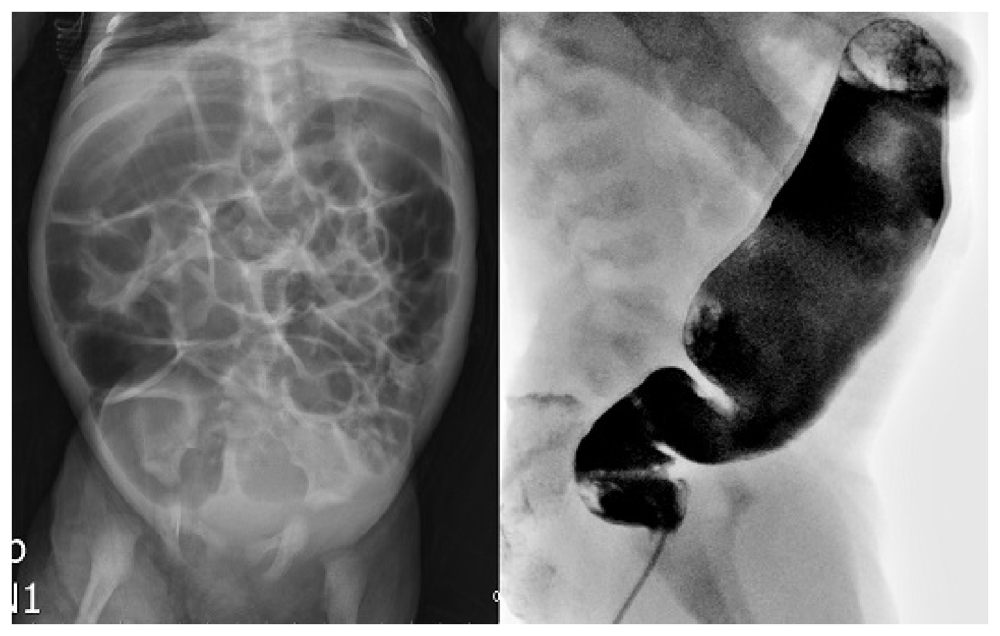
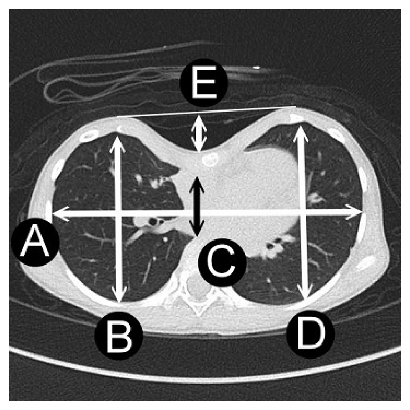
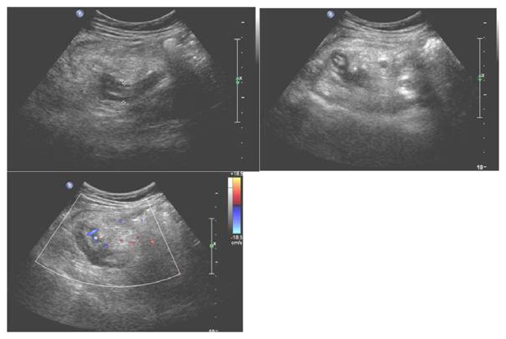
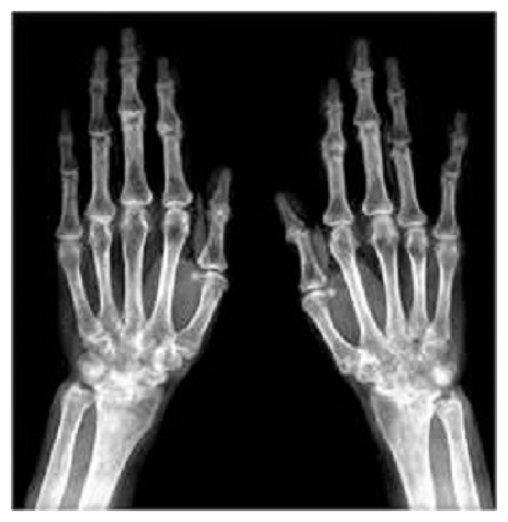

開卷有益 ／
醫師 ／ 醫學（五）（包括外科、骨科、泌尿科等科目及其相關臨床實例與醫學倫理） ／ 113 年第 2 次113 年第 2 次醫師醫學（五）（包括外科、骨科、泌尿科等科目及其相關臨床實例與醫學倫理）試題與答案
這一頁是民國 113 年第 2 次醫師醫學（五）（包括外科、骨科、泌尿科等科目及其相關臨床實例與醫學倫理）的整份歷屆試題，共 80 題，題目與標準答案出自考選部「國家考試試題及測驗式試題答案」開放資料，其中 80 題附有詳解。以下逐題列出題幹、選項與答案；要計時作答或記錄成績，請用線上練習。
考選部原始場次代碼：113070
線上作答這一科 →
全部 80 題
第 1 題
有關敗血性休克（septic shock）的處置，下列何者最不適當？
（A） 若病人有組織灌流不足的現象，應在前3小時內至少給與30 mL/kg的crystalloid液體（B） 若給了適當輸液後平均動脈壓仍低於65 mmHg時，可以使用升壓劑（C） 抗生素的給與必須等到細菌培養結果後再對菌下藥（D） 升壓劑的使用以norepinephrine為第一選項答案：（C）
詳解與考點 正解：敗血性休克的抗生素時機。懷疑敗血症後應儘速取得適當檢體並開始經驗性廣效抗生素，不能等待培養結果才治療；培養結果是後續降階或調整依據，因此最不適當的是 C。
A：組織灌流不足的敗血性休克初期可給予晶體液復甦，30 mL/kg 是常用的初始復甦量，敘述合宜。
B：適當輸液後平均動脈壓仍低於 65 mmHg 時，使用升壓劑以維持灌流壓是合理處置。
D：norepinephrine 是敗血性休克常用的第一線升壓劑，敘述正確。
本題考點：敗血性休克（septic shock）的早期復甦；經驗性抗生素（empiric antibiotics）應及早給予；norepinephrine 與平均動脈壓（mean arterial pressure）目標。
第 2 題
有關胸部外傷的緊急處置，下列何者正確？
（A） 病人有開放性氣胸（open pneumothorax）時，應趕緊將傷口用凡士林紗布蓋住以避免漏氣，當病人有變化才考慮放置胸管（B） 若傷口恰巧在放置胸管的位置（第五肋間與腋中線）時，可將傷口消毒後，經傷口放置胸管以減少對胸腔壁的傷害（C） 張力性氣胸（tension pneumothorax）可能不會有頸靜脈怒張（D） 放置胸管時，必須確定管子沿著肋骨下緣滑進，以免傷及血管或神經答案：（C）
詳解與考點 正解：張力性氣胸的臨床徵象不一定完整。頸靜脈怒張可因張力性氣胸的胸腔內壓升高而出現，但合併失血、低血容量或其他胸傷時可能不明顯，因此 C 正確。
A：開放性氣胸可先以三邊固定的敷料暫時覆蓋，並應儘早在傷口以外的適當位置放置胸管；只等待病人變化才放胸管會延誤處置。
B：傷口即使位在常用胸管位置，也不宜直接經污染傷口置入胸管，應另選適當無菌部位以降低污染與位置不當風險。
D：胸管應沿肋骨上緣進入，避開位於肋骨下緣的肋間血管與神經；本選項把方向說反。
本題考點：張力性氣胸（tension pneumothorax）的臨床診斷；開放性氣胸（open pneumothorax）的暫時封閉與胸管引流；肋間神經血管束（intercostal neurovascular bundle）位於肋骨下緣。
第 3 題
手術後使用全中心靜脈營養（total parenteral nutrition, TPN）注射之病人，中心靜脈導管感染為常見之併發症，下列敘述何者最不適當？
（A） 置放於股靜脈之導管感染率較高（B） 為避免感染，中心靜脈導管放置後，須每週更換（C） 導管相關之感染以葡萄球菌為主（D） 使用TPN之病人若發燒時，若無其他原因，應考慮拔除導管並作細菌培養答案：（B）
詳解與考點 正解：中心靜脈導管感染的預防。導管不應為了預防感染而按固定週期例行更換；應每日評估必要性，僅在不再需要、功能異常或懷疑感染等情況更換或移除，故最不適當的是 B。
A：股靜脈置管的感染與血栓風險較高，在可行時通常優先考慮其他部位，敘述合宜。
C：導管相關血流感染常見病原包括葡萄球菌，尤其皮膚常在菌，敘述正確。
D：使用 TPN 的病人發燒時應評估導管相關感染；若無其他感染來源且臨床懷疑高，移除導管並送培養是合理作法。
本題考點：中心靜脈導管相關血流感染（central line-associated bloodstream infection, CLABSI）；中心靜脈導管（central venous catheter）的每日必要性評估；葡萄球菌（Staphylococcus）與導管感染。
第 4 題
Klatskin tumor是指發生於下列何處之腫瘤？
（A） 左右肝管匯合處（B） 總膽管（C） 膽囊管（D） 十二指腸壺腹處答案：（A）
詳解與考點 正解：Klatskin tumor 的解剖位置。Klatskin tumor 是肝門型膽管癌（perihilar cholangiocarcinoma），發生在左右肝管匯合處，故選 A。
B：總膽管腫瘤屬遠端膽管癌的範圍，解剖位置不同於肝門處的 Klatskin tumor。
C：膽囊管腫瘤發生在膽囊與膽道連接處，並非左右肝管匯合處。
D：十二指腸壺腹處腫瘤是壺腹周圍腫瘤，位置在膽胰管開口附近，與肝門型膽管癌不同。
本題考點：Klatskin tumor；肝門型膽管癌（perihilar cholangiocarcinoma）；左右肝管匯合處（hepatic duct confluence）的膽道解剖。
第 5 題
關於腹內感染之抗生素使用期間，下列敘述何者最恰當？
（A） 外傷性腸穿孔於12小時內接受手術修補之病患，建議施打3天（B） 未穿孔之急性闌尾炎接受闌尾切除手術後，建議連續施打3天抗生素（C） 未穿孔之腸壞死，經切除腸道後，抗生素施打建議不超過24小時（D） 穿孔性闌尾炎術後，抗生素須施打10天答案：（C）
詳解與考點 正解：「未穿孔」腸壞死已完成腸段切除，代表感染源已獲充分控制且沒有腹腔內容物外漏。此時抗生素屬圍手術預防或短期治療，通常不應超過 24 小時，故選 C。
A：外傷性腸穿孔若於 12 小時內接受手術修補，抗生素原則上不超過 24 小時；固定施打 3 天過長，故不恰當。
B：未穿孔急性闌尾炎完成闌尾切除後已有良好感染源控制，通常不需要連續施打 3 天抗生素。
D：穿孔性闌尾炎術後抗生素需依臨床反應及感染源控制調整，並非一律必須固定施打 10 天；它看似保守完整，卻會造成不必要的抗生素暴露。
本題考點：腹內感染（intra-abdominal infection）的感染源控制（source control）；圍手術抗生素（perioperative antibiotics）；依穿孔與否及控制充分性決定抗生素療程。
第 6 題
有關使用鈣調磷酸酶抑制劑（calcineurin inhibitors）的副作用，下列敘述何者錯誤？
（A） tacrolimus比cyclosporine較可能導致禿髮（B） tacrolimus比cyclosporine較可能導致牙齦肥厚（C） tacrolimus比cyclosporine有較高的神經毒性（D） tacrolimus比cyclosporine有較高的移植後糖尿病發生率答案：（B）
詳解與考點 正解：題目問錯誤敘述，關鍵是 tacrolimus 與 cyclosporine 的副作用差異。牙齦肥厚是 cyclosporine 較具代表性的副作用，不是 tacrolimus 較常造成，因此 B 錯誤。
A：tacrolimus 較 cyclosporine 更可能出現禿髮，敘述正確。
C：tacrolimus 的神經毒性較為突出，可出現顫抖等神經系統副作用，敘述正確。
D：tacrolimus 較 cyclosporine 更容易造成移植後糖尿病，與其代謝相關副作用有關，敘述正確。
本題考點：鈣調磷酸酶抑制劑（calcineurin inhibitors）；tacrolimus 的神經毒性、禿髮與移植後糖尿病；cyclosporine 的牙齦肥厚（gingival hyperplasia）。
第 7 題
下列何種微量元素缺乏，較少見於短腸症（short bowel syndrome）？
（A） 鋅（Zinc）（B） 銅（Copper）（C） 錳（Mn）（D） 維生素（vitamins）本題送分，無標準答案
詳解與考點 本題官方公告送分。
第 8 題
因為神經影像檢查的進步，發現許多腦轉移的病例，其中最常見的腦轉移，其原發來源是：
（A） 乳癌（B） 黑色素癌（C） 腎臟癌（D） 肺癌答案：（D）
詳解與考點 正解：「最常見的腦轉移原發來源」。成人腦轉移瘤最常見的原發癌為肺癌；肺癌盛行、血行轉移機會高，因此臨床發現腦轉移時必須優先評估胸腔與肺部原發病灶，故選 D。
A：乳癌也是腦轉移的重要原發癌，尤其特定分子亞型較易中樞轉移，因而看似合理；但整體最常見的原發來源仍是肺癌，非乳癌。
B：黑色素瘤有明顯腦轉移傾向，且轉移灶常可出血；不過其總病例數較肺癌少，不能作為最常見來源。
C：腎臟癌可血行轉移至腦部，轉移灶亦可能高度血管化或出血，但不是腦轉移最常見的原發癌。
本題考點：腦轉移瘤（brain metastasis）——成人最常見原發來源為肺癌；鑑別腦轉移與原發性腦腫瘤時，應結合病史與全身原發癌搜尋。
第 9 題
下列何種腦腫瘤的好發年齡（peak age）最小？
（A） pineocytoma（B） central neurocytoma（C） ganglioglioma（D） medulloblastoma答案：（D）
詳解與考點 正解：比較各種腦腫瘤的好發年齡。medulloblastoma 是典型兒童後顱窩惡性腫瘤，發病高峰在兒童期；其餘選項多較偏青少年至成人，因此好發年齡最小的是 D。
A：pineocytoma 起源於松果體實質細胞，較常見於成人，並非四者中年齡最小者。
B：central neurocytoma 常見於年輕成人，典型位置在側腦室，發病年齡晚於 medulloblastoma。
C：ganglioglioma 常見於兒童或年輕人，亦常以癲癇表現，所以看似可與兒童腫瘤混淆；但其整體好發年齡仍較 medulloblastoma 大。
本題考點：兒童腦腫瘤（pediatric brain tumors）——medulloblastoma 為兒童常見的後顱窩腫瘤；central neurocytoma 偏年輕成人，pineocytoma 偏成人。
第 10 題
有關腦部海綿狀血管畸形（cerebral cavernous malformations），下列何者正確？
（A） 診斷以血管攝影為主（B） 以Spetzler-Martin grading system來評估腦部海綿狀血管畸形，分數越低越容易處理（C） 一旦出血破裂常是致命的（D） 可能產生的症狀包含癲癇答案：（D）
詳解與考點 正解：腦部海綿狀血管畸形的臨床表現。腦部海綿狀血管畸形可因反覆微出血、皮質刺激或病灶位置造成癲癇、局部神經缺損或頭痛；其中癲癇是常見表現之一，故選 D。
A：海綿狀血管畸形的血流緩慢，常是血管攝影陰性病灶；診斷主要依賴 MRI 的典型混合訊號與含鐵血黃素環，而非以血管攝影為主。
B：Spetzler-Martin grading system 是用於腦動靜脈畸形（arteriovenous malformation）的分級，不適用於海綿狀血管畸形。
C：海綿狀血管畸形可以出血，但多為小量、低壓出血；「一旦破裂常致命」較像高流量血管病灶或大出血的描述，並非其典型自然史。
本題考點：腦部海綿狀血管畸形（cerebral cavernous malformation）——MRI 為主要診斷工具，血管攝影常無特異發現；常見表現包括癲癇、出血與局部神經症狀。
第 11 題
下列關於L5 root的敘述，何者正確？
（A） 沿著L4椎莖（pedicle）下方，L4-5椎間盤之前出神經孔（B） 感覺分布於大腿後外側到小腿、足踝（C） 主管tibialis anterior力量，若有病變會有drop foot情況（D） 若有病變，knee jerk reflex會減少答案：（C）
詳解與考點 正解：L5 神經根的運動支配。L5 神經根負責踝背屈與大拇趾伸直的重要肌群，包括 tibialis anterior；L5 病變會造成背屈無力，嚴重時可呈現 drop foot，故選 C。
A：腰椎神經根通常由相應椎莖下方離開神經孔；L5 神經根位於 L5 椎莖下方、經 L5-S1 椎間孔離開，不是沿 L4 椎莖下方在 L4-5 椎間盤前出孔。
B：L5 感覺支配較典型為小腿外側、足背與大拇趾；大腿後外側延至足踝較接近坐骨神經或 S1 相關分布，敘述過於廣泛且不符典型皮節。
D：knee jerk 主要反映 L3-L4 神經根與股神經功能；L5 病變較不會以膝反射下降為主要發現。
本題考點：L5 神經根病變（L5 radiculopathy）——運動上可見踝背屈與大拇趾伸直無力；感覺常涉及足背與大拇趾；膝反射主要對應 L3-L4。
第 12 題
頭部外傷病人，昏迷指數13分，額葉腦出血10 c.c.，下列處置何者最不適當？
（A） 預防性投與抗癲癇藥物（B） 血中二氧化碳濃度（PCO2）維持在35～40 mmHg（C） 開顱手術移除血塊，以降腦壓（D） 維持收縮壓在100 mmHg 以上答案：（C）
詳解與考點 正解：GCS 13 分且額葉腦出血僅 10 c.c.，問最不適當處置。此時首先重點是神經監測、避免低血壓與低氧，以及依風險處理癲癇與通氣；未見大血腫、進行性神經惡化或明確顱內壓失控時，直接開顱清除血塊並非例行處置，故選 C。
A：皮質挫傷或創傷性腦內出血有早期外傷後癲癇風險，短期預防性抗癲癇藥可作為臨床考量，並非本情境最不適當的處置。
B：避免高碳酸血症有助避免腦血管擴張；將 PCO2 維持在正常偏低範圍屬支持性通氣策略。它看似是侵入性處置，但不等同於不當的持續過度換氣。
D：創傷性腦損傷應避免低血壓，以維持腦灌流壓；維持收縮壓在 100 mmHg 以上是合理的基本目標。
本題考點：創傷性腦內出血（traumatic intracerebral hemorrhage）——手術適應症須看血腫量、神經惡化、顱內壓與位置；腦傷初期處置重視避免低氧、低血壓與高碳酸血症。
第 13 題
有關舟形頭（scaphocephaly）的敘述，下列何者正確？
（A） 冠狀縫線（coronal suture）過早黏合（B） 常合併眼球突出外觀（C） 不常合併上頜骨發育不全（maxillary hypoplasia）（D） 常合併水腦症答案：（C）
詳解與考點 正解：舟形頭的單一顱縫早閉特徵。scaphocephaly 多由矢狀縫線（sagittal suture）過早黏合造成，通常呈前後徑拉長、狹長頭形；它不像多縫早閉症常伴中臉發育不足，故「不常合併上頜骨發育不全」正確，選 C。
A：冠狀縫線早閉較造成短頭或前斜頭，不是典型舟形頭的病因；舟形頭的關鍵是矢狀縫線早閉。
B：明顯眼球突出較常見於影響眼眶的冠狀縫線早閉或症候群性顱縫早閉；單純舟形頭並非典型表現。
D：水腦症較值得在複雜或症候群性顱縫早閉中留意；單純矢狀縫線早閉不以常合併水腦症為特徵。
本題考點：舟形頭（scaphocephaly）——最常由矢狀縫線早閉（sagittal synostosis）造成；須與冠狀縫線早閉及症候群性顱縫早閉的眼眶、中臉與腦脊髓液問題區分。
第 14 題
手指遠端伸直肌腱（extensor tendon of distal interphalanges）斷裂會造成何種情形？
（A） mallet finger（B） swan-neck deformity（C） boutonnière deformity（D） gamekeeper deformity答案：（A）
詳解與考點 正解：遠端指間關節（DIP）伸直肌腱斷裂。末端伸肌腱斷裂後，病人無法主動伸直 DIP，指尖呈下垂，這正是 mallet finger，故選 A。
B：swan-neck deformity 是近端指間關節（PIP）過伸、DIP 屈曲的變形，常與掌側板或肌腱平衡失調相關，不是單純末端伸肌腱斷裂的直接表現。
C：boutonnière deformity 是 PIP 屈曲合併 DIP 過伸，典型機轉為中央束（central slip）受損；其受傷位置在 PIP 的伸肌腱裝置。
D：gamekeeper deformity 是拇指掌指關節尺側副韌帶（ulnar collateral ligament）損傷造成，與手指 DIP 伸肌腱無關。
本題考點：槌狀指（mallet finger）——DIP 末端伸肌腱斷裂造成指尖下垂；中央束受損造成 boutonnière deformity；拇指尺側副韌帶損傷稱 gamekeeper thumb。
第 15 題
橈動脈前臂皮瓣（radial forearm flap）屬於Nahai-Mathes classification中對筋膜皮瓣（fasciocutaneous flap）的那一項分類？
（A） 第A類（B） 第B類（C） 第C類（D） 第D類答案：（B）
詳解與考點 正解：Nahai-Mathes 對筋膜皮瓣血管供應型態的分類。橈動脈前臂皮瓣的皮膚供應來自橈動脈的 septocutaneous perforator，屬第 B 類筋膜皮瓣，故選 B。
A：第 A 類為 direct cutaneous 血管供應；橈動脈前臂皮瓣不是此類。
C：第 C 類為 musculocutaneous perforator 血管供應，與橈動脈前臂皮瓣的 septocutaneous perforator 不同。
D：Nahai-Mathes 的筋膜皮瓣分類沒有第 D 類，故不符。
本題考點：筋膜皮瓣（fasciocutaneous flap）——Nahai-Mathes classification 依血管供應型態區分 direct cutaneous、septocutaneous perforator 與 musculocutaneous perforator；橈動脈前臂皮瓣（radial forearm flap）屬第 B 類。
第 16 題
60歲郭先生，有抽菸及嚼食檳榔習慣已維持近30年，近3個月來因舌頭右側有一3 cm潰瘍性傷口無法癒合，到醫院求診，頸部淋巴檢查發現，在同側anterior belly of the digastric muscle, hyoid bone, andmidline之間區域有一2 cm × 2 cm疑似淋巴結腫大。此腫塊位於頸部淋巴結之那一區域？
（A） level IA（B） level IIA（C） level IIB（D） level III答案：（A）
詳解與考點 正解：腫大淋巴結位於兩側 digastric muscle anterior belly、舌骨與頸部正中線之間。此為頦下三角（submental triangle），對應頸部淋巴結 level IA；舌癌可轉移至此區，故選 A。
B：level IIA 位於上頸靜脈鏈，通常在顱底至舌骨、胸鎖乳突肌與內頸靜脈附近，並非正中頦下區。
C：level IIB 也屬上頸靜脈鏈，但在副神經後方，位置更偏外側後方，不符合題幹的正中解剖界線。
D：level III 為中頸靜脈鏈，位於舌骨至環狀軟骨附近，並不在兩側二腹肌前腹之間。
本題考點：頸部淋巴結分區（neck lymph node levels）——level IA 為頦下區，界於兩側二腹肌前腹與舌骨；level IB 為頜下區，須與 IA 分辨。
第 17 題
承上題，病理切片結果及相關影像學檢查顯示，證實為舌部鱗狀上皮細胞癌（squamous cellcarcinoma），病灶大小為3 cm，厚度2 cm且侵犯深度為11 mm，發現在同側局部淋巴結（regional lymphnode）有3顆轉移約為2 cm並且無囊外淋巴結延伸（extranodal extension），無遠端器官轉移。根據AJCC8th指引，郭先生目前癌症分期為下列何者？
（A） T3N2aM0（B） T3N2cM0（C） T2N2cM0（D） T3N2bM0答案：（D）
詳解與考點 正解：舌部鱗狀上皮細胞癌大小 3 cm、侵犯深度 11 mm，以及同側 3 顆、各約 2 cm、無囊外延伸的區域淋巴結轉移。口腔癌原發腫瘤在大小不超過 4 cm 但侵犯深度超過 10 mm 時為 T3；多顆同側淋巴結、皆不超過 6 cm 且無 extranodal extension 為 N2b；無遠端轉移為 M0，故為 T3N2bM0，選 D。
A：T3 的原發腫瘤判定正確，但 N2a 通常是單一同側淋巴結達到特定大小範圍且無囊外延伸；本題是 3 顆同側淋巴結，不符「單一」條件。
B：N2c 指雙側或對側淋巴結轉移；題幹明示均為同側淋巴結，故不能選 N2c。
C：T2 可涵蓋較小腫瘤或較淺侵犯深度，但本題侵犯深度 11 mm 已跨入 T3；這是本題最強誘答，因為單看 3 cm 容易誤判為 T2。
本題考點：口腔癌 TNM 分期（oral cavity cancer TNM staging）——舌癌 T 分期須同看最大徑與侵犯深度（depth of invasion）；同側多顆、無囊外延伸的淋巴結轉移為 N2b；遠端轉移以 M 分期表示。
第 18 題
蘇老先生四年前中風後即長期臥床，近日家屬發現其臀部有四公分傷口，經整形外科醫師診斷為壓瘡（pressure sore），建議手術治療。術中發現傷口壞死範圍深及骨頭，此褥瘡的深度分級與最好的重建方法各為何？
（A） Stage II；清創後直接縫合是簡單可行的方法（B） Stage III；清創後植皮覆蓋傷口（C） Stage IV；清創後局部臀大肌皮瓣重建術（D） Stage V；清創後顯微皮瓣重建術答案：（C）
詳解與考點 正解：壓瘡壞死深及骨頭。全層皮膚與組織缺損並暴露或直接觸及骨頭，符合 Stage IV 壓瘡；清創後需要可提供厚實、耐壓且血流良好的組織覆蓋，局部臀大肌皮瓣是合適的重建方式，故選 C。
A：Stage II 是部分厚度皮膚缺損，不會深及骨頭；直接縫合在長期受壓、組織缺損深的壓瘡也無法提供可靠覆蓋。
B：Stage III 為全層皮膚缺損但沒有骨、肌腱或肌肉直接暴露；題幹已明示深及骨頭，分期不足，且植皮耐壓性較差。
D：壓瘡標準分期沒有 Stage V；顯微皮瓣並非此類臀部壓瘡的常規首選，局部皮瓣通常更能提供相近組織的覆蓋。
本題考點：壓瘡分期（pressure injury staging）——Stage IV 可見或可觸及深層筋膜、肌肉、肌腱、軟骨或骨；重建原則為充分清創、處理壓力來源並以耐壓的血管化皮瓣覆蓋。
第 19 題
關於二尖瓣閉鎖不全，下列敘述何者錯誤？
（A） 可能原因包含myxomatous degeneration、rheumatic heart disease、infective endocarditis等（B） 聽診聽到的心雜音為pan-diastolic murmur（C） 慢性的二尖瓣閉鎖不全，左心室會透過代償進行重塑，因此病人可能會沒有症狀（D） 胸部X光可能發現病人有肺水腫及左心房擴大答案：（B）
詳解與考點 正解：二尖瓣閉鎖不全的心雜音時相。二尖瓣逆流在左心室收縮時發生，血液由左心室逆流至左心房，因此典型為心尖部全收縮期雜音（holosystolic murmur），不是 pan-diastolic murmur；錯誤的是 B。
A：黏液樣退化、風濕性心臟病與感染性心內膜炎都可破壞瓣葉、腱索或瓣膜支持結構，成為二尖瓣閉鎖不全的病因，敘述正確。
C：慢性逆流會使左心房與左心室容量負荷增加，早期可透過擴張與重塑維持前向心輸出量，因此病人可能長期無症狀，敘述正確。
D：嚴重或失代償的二尖瓣閉鎖不全可造成左心房擴大與肺靜脈鬱血，胸部 X 光可能看到肺水腫，敘述正確。
本題考點：二尖瓣閉鎖不全（mitral regurgitation）——逆流發生於收縮期，典型為心尖部全收縮期雜音；慢性容量負荷可導致左心房、左心室擴大與肺鬱血。
第 20 題
使用雙側內乳動脈（internal mammary artery）做冠狀動脈繞道手術已被證實可以增加存活率，但某些病人可能不適合，下列那一個病人最適合使用雙側內乳動脈進行繞道手術？
（A） 60歲，高血壓，慢性肺阻塞疾病（COPD）使用吸入型支氣管擴張劑（B） 70歲，糖化血色素（HbA1c）為6.0%，Body Mass Index（BMI）=35，eGFR=60 mL/min/1.73m2（C） 70歲，末期腎病變，雙手血壓收縮壓相差50 mmHg（D） 90歲，糖化血色素（HbA1c）為8.0%，總膽固醇=200 mg/dL，低密度膽固醇=100 mg/dL答案：（A）
詳解與考點 正解：雙側內乳動脈可改善長期存活，但須避開胸骨傷口感染與血管來源風險高者。60 歲且高血壓、以吸入藥控制 COPD 的病人，未見嚴重肥胖、糖尿病控制不佳、末期腎病或極高齡等明顯不利條件，四者中最適合雙側內乳動脈繞道，故選 A。
B：HbA1c 6.0% 顯示糖代謝控制不差，因而看似可選；但 BMI 35 代表明顯肥胖，雙側內乳動脈取用後的胸骨傷口併發症風險需特別審慎評估，較 A 不理想。
C：末期腎病變常需保留上肢血管通路；雙側上肢收縮壓相差 50 mmHg 也提示可能有鎖骨下動脈病變，會影響內乳動脈血流來源，不適合。
D：90 歲合併 HbA1c 8.0% 屬高齡且糖尿病控制較差，胸骨傷口感染與手術恢復風險高，不是優先考慮雙側內乳動脈的對象。
本題考點：雙側內乳動脈繞道（bilateral internal mammary artery grafting）——可提供長期通暢與存活效益，但須平衡高齡、肥胖、糖尿病、腎病與鎖骨下動脈狹窄等胸骨傷口或血流風險。
第 21 題
下列何者為急性肢體缺血（acute ischemic limb）最常見之原因？
（A） 頸動脈阻塞（B） 先天性之血管異常（C） 心臟產生之血栓（D） 小洞性腦梗塞（lacunar infarction）答案：（C）
詳解與考點 正解：急性肢體缺血最常見的原因。急性肢體缺血常由心源性栓子突然阻塞周邊動脈，常見來源包括心房顫動相關左心房血栓或心室內血栓，因此選 C。
A：頸動脈阻塞主要造成腦部灌流不足或缺血性腦中風，不是急性肢體缺血最常見的原因。
B：先天性血管異常可造成局部灌流問題，但並非成人急性動脈阻塞的常見病因。
D：小洞性腦梗塞是腦部小穿通枝血管疾病，與周邊動脈急性栓塞無直接關係。
本題考點：急性肢體缺血（acute limb ischemia）——常由心源性栓塞（cardioembolism）或原有周邊動脈疾病的急性血栓形成造成；臨床須迅速評估缺血嚴重度與再灌流時效。
第 22 題
腹主動脈瘤（infra-renal abdominal aortic aneurysm）開刀之適應症，下列何者最不適當？
（A） 男性，過去一年腹主動脈瘤的直徑從4公分擴大到4.5公分（B） 女性，有症狀、直徑5公分的腹主動脈瘤（C） 男性，沒有症狀、直徑5.5公分的腹主動脈瘤（D） 女性，直徑4.5公分的腹主動脈瘤且手術風險低答案：（A）
詳解與考點 正解：官方答案為 A；惟無症狀女性腹主動脈瘤在 4.5 cm 且手術風險低時是否可選擇性介入，會隨教材與指引門檻而異。男性無症狀腹主動脈瘤由 4 cm 增至 4.5 cm，僅依此資訊主張開刀仍不適當，故本題列 A 為答案。
B：有症狀的腹主動脈瘤即使直徑未達一般無症狀門檻，也須積極評估修補；女性 5 cm 且有症狀是合理的手術考量。
C：男性無症狀腹主動脈瘤直徑 5.5 cm 已達常用選擇性修補門檻，因此是適當的手術適應症。
D：女性的腹主動脈瘤破裂風險可能在較小直徑上升，但 4.5 cm 的無症狀個案不能只因手術風險低就視為一般公認的介入適應症；此選項與 A 的相對不適當性存在教材門檻爭議。
本題考點：腹主動脈瘤修補（abdominal aortic aneurysm repair）——適應症需整合症狀、直徑、成長速度、性別與手術風險；無症狀男性的常用選擇性修補門檻為 5.5 cm，女性門檻具指引與個案差異。
第 23 題
1個月大女嬰，出生後診斷為完全型之心內膜墊異常（complete form, atrioventricular defect），下列敘述何者錯誤？
（A） 此類病患會很快心臟衰竭，需儘早手術，對此女嬰可建議肺動脈窄縮術（pulmonary artery banding）（B） 此病人之心臟傳導系統（conduction system）及房室結（atrioventricular node）位置與單純性之大動脈轉位（simple transposition of great arteries）一樣（C） 此類病患與單純心房及心室中隔缺損（simple atrial defect and ventricular defect）不同，在全矯正之後，仍有可能會有二尖瓣或三尖瓣之問題（D） 其瓣膜之異常主要是根據Rastelli classification分類，主要分A、B、C三型態答案：（B）
詳解與考點 正解：完全型心內膜墊缺損的房室結與傳導系統解剖。完全型房室中隔缺損（complete atrioventricular septal defect）的共同房室瓣與中隔解剖異常，會使房室結及傳導束的位置不同於單純大動脈轉位；因此將兩者說成位置一樣是錯誤敘述，故選 B。
A：完全型房室中隔缺損可因大量左向右分流而早期心衰竭；對極小、全身狀況不宜直接全矯正的嬰兒，肺動脈窄縮術可作為減少肺血流的暫時策略，敘述可成立。
C：即使完成全矯正，房室瓣形態與瓣膜閉鎖不全仍可能留下長期問題；這點與單純 ASD、VSD 修補後的情況不同，敘述正確。
D：共同房室瓣的瓣葉構型可依 Rastelli classification 分為 A、B、C 型，為完全型房室中隔缺損的重要形態分類，敘述正確。
本題考點：完全型房室中隔缺損（complete atrioventricular septal defect）——具有共同房室瓣與房、室中隔缺損；手術須注意異位的傳導系統與術後房室瓣逆流；共同房室瓣可用 Rastelli classification 描述。
第 24 題
在一般開心手術中，二尖瓣置換及三尖瓣手術中，心肺機體外循環建立過程，那一大血管比較少放置引流管路（cannula）？
（A） 主動脈（aorta）（B） 上腔靜腔（superior vena cava）（C） 下腔靜脈（inferior vena cava）（D） 肺動脈（pulmonary artery）答案：（D）
詳解與考點 正解：二尖瓣置換與三尖瓣手術的體外循環靜脈回流建立。這類手術常以主動脈置入動脈灌流管，並分別置入上、下腔靜脈引流管，以利右心房開啟與良好靜脈回流；肺動脈通常不需作為常規引流管置放處，故選 D。
A：主動脈是標準體外循環的常用動脈灌流位置，雖其功能是送血而非靜脈引流，仍是常規 cannulation 的大血管。
B：三尖瓣手術通常需要良好右心隔離，因此上腔靜脈常置入引流管，以回收上半身靜脈血。
C：下腔靜脈同樣常置入引流管，與上腔靜脈形成 bicaval cannulation，方便右心房手術。
本題考點：心肺機體外循環（cardiopulmonary bypass）——主動脈提供動脈灌流；二尖瓣與三尖瓣手術常採雙腔靜脈引流（bicaval cannulation）；肺動脈不是常規引流位置。
第 25 題
關於食道癌之敘述，下列何者正確？
（A） 在美國，食道腺癌（adenocarcinoma）之近年發生率已高於食道鱗狀上皮細胞癌（squamous cellcarcinoma）（B） 食道鱗狀上皮細胞癌（squamous cell carcinoma）與巴瑞特氏食道炎（Barrett esophagus）有高度相關（C） 食道癌最常見症狀為聲音沙啞（hoarseness）（D） 在臺灣，喝酒、抽菸與食道腺癌（adenocarcinoma）有高度相關答案：（A）
詳解與考點 正解：美國食道癌組織型的流行病學變化。美國近年食道腺癌發生率已超過食道鱗狀上皮細胞癌，與肥胖、胃食道逆流及 Barrett esophagus 的盛行相關，故選 A。
B：Barrett esophagus 是長期胃食道逆流造成的化生，主要增加食道腺癌風險；與其高度相關的不是食道鱗狀上皮細胞癌。
C：食道癌最常見症狀是進行性吞嚥困難，常先對固體食物困難；聲音沙啞可在侵犯喉返神經時出現，但不是最常見表現。
D：在臺灣，飲酒與吸菸尤其和食道鱗狀上皮細胞癌相關，故將其主要連結至食道腺癌錯誤。
本題考點：食道癌（esophageal cancer）——食道腺癌與 Barrett esophagus、胃食道逆流相關；鱗狀上皮細胞癌與菸、酒等暴露相關；典型症狀為進行性吞嚥困難。
第 26 題
關於食道旁疝氣（paraesophageal hernia）之敘述，下列何者正確？
（A） 病人除非發生胃扭轉壞死，否則只要藥物控制即可（B） 對於年紀大於60歲，無症狀之病人，以手術治療為主（C） 病人發生吞嚥困難症狀比胃食道逆流症狀多（D） 手術治療時，因胃賁門結構破壞，除將食道橫膈修補外，不需經食道壓力檢測（manometry），皆需實施胃抗逆流手術（Ｎissen fundoplication），減少胃食道逆流症狀（GERD）答案：（C）
詳解與考點 正解：食道旁疝氣的症狀型態。paraesophageal hernia 的胃食道交界處多仍位於橫膈下，較常造成餐後飽脹、胸痛、吞嚥困難或胃扭轉風險，而非典型胃食道逆流；因此吞嚥困難比 GERD 症狀常見，故選 C。
A：食道旁疝氣不必等到胃扭轉壞死才處理；有症狀、阻塞、貧血或扭轉風險時應評估手術，不能一概只用藥物控制。
B：年齡超過 60 歲且無症狀本身不是以手術為主的絕對條件；需衡量症狀、疝氣特徵、手術風險與追蹤可行性。
D：修補裂孔後是否加做 fundoplication 要依病人的食道蠕動與逆流風險個別決定；manometry 有助規劃術式，不能說不需檢測且人人都必須做 Nissen fundoplication。
本題考點：食道旁疝氣（paraesophageal hernia）——常見機械性症狀如吞嚥困難與飽脹，並有胃扭轉風險；術前食道功能評估（esophageal manometry）可協助選擇裂孔修補與抗逆流手術策略。
第 27 題
關於乳糜胸（chylothorax）之敘述，下列何者錯誤？
（A） 乳糜內含高濃度的三酸甘油脂（triglyceride）（B） 常見於胸部淋巴結廓清術後（C） 一開始可以保守治療，給與長鏈三酸甘油脂（long-chain triglyceride）飲食（D） 肺部腫瘤亦可能引起乳糜胸答案：（C）
詳解與考點 正解：乳糜胸的初始保守治療。乳糜來自腸道吸收的脂肪，長鏈三酸甘油脂會經腸道淋巴系統進入胸導管，反而增加乳糜流量；保守處置應減少此途徑的脂肪輸送，而非給予長鏈三酸甘油脂飲食。因此錯誤的是 C。
A：乳糜的三酸甘油脂濃度高，是確認乳糜性胸水的重要生化特徵，敘述正確，故非答案。
B：胸部手術，尤其涉及縱隔淋巴結廓清時，可能傷及胸導管或其分支而造成乳糜胸，敘述正確。
D：肺部或縱隔腫瘤可阻塞、侵犯胸導管，因而造成非創傷性的乳糜胸，敘述正確。
本題考點：乳糜胸（chylothorax）與胸導管（thoracic duct）損傷；長鏈三酸甘油脂（long-chain triglyceride）經腸道淋巴運輸，保守治療的目的在降低乳糜流量。
第 28 題
下列何種黴菌感染最常造成含有黴菌球（fungus ball）之空腔？
（A） 麴菌（aspergillosis）（B） 組織胞漿菌（histoplasmosis）（C） 球黴菌（coccidioidomycosis）（D） 隱孢子球菌（cryptococcosis）答案：（A）
詳解與考點 正解：空腔內的黴菌球（fungus ball）。麴菌可在既有肺部空腔內形成由菌絲、黏液與細胞碎屑構成的團塊，稱為麴菌球（aspergilloma）；它常是定植於既有空腔，而非必然代表侵襲性肺炎，故選 A。
B：組織胞漿菌可造成肺部肉芽腫、纖維化或空洞病灶，但空腔內典型菌球最常聯想到麴菌，故非本題答案。
C：球黴菌感染可有肺炎或殘留空洞，卻不是最常在空洞中形成典型黴菌球的病原，故非答案。
D：隱球菌可引起肺部結節或中樞神經感染，但典型的空腔菌球並非其常見表現。
本題考點：麴菌球（aspergilloma）是麴菌（Aspergillus）在既有肺空腔內定植形成的菌絲團塊；須與侵襲性麴菌症（invasive aspergillosis）區分。
第 29 題
有關thymoma，下列敘述何者錯誤？
（A） 是兒童最常見的縱隔腔腫瘤（B） 應儘量採取外科手術切除治療（C） 可能會合併myasthenia gravis（D） 無法立即手術切除時，以cisplatin為主之化學治療通常效果良好答案：（A）
詳解與考點 正解：胸腺瘤（thymoma）的年齡分布。胸腺瘤主要見於成人，並非兒童最常見的縱隔腫瘤；兒童縱隔腫瘤的鑑別與成人不同，因此 A 的年齡描述錯誤，故選 A。
B：可切除的胸腺瘤以完整外科切除為主要治療，手術切除程度也是重要預後因素，敘述正確。
C：胸腺瘤與重症肌無力（myasthenia gravis）有典型關聯，看到胸腺瘤時須評估相關自體免疫症候，敘述正確。
D：不可立即切除的局部進展胸腺瘤可先採以 cisplatin 為基礎的全身治療，目的在縮小腫瘤並爭取後續局部治療，敘述正確。
本題考點：胸腺瘤（thymoma）多發於成人；完整切除（complete resection）是可切除病灶的治療核心；重症肌無力（myasthenia gravis）是重要合併症。
第 30 題
有關縱隔腔感染，下列敘述何者錯誤？
（A） Pel-Ebstein fever是典型症狀之一（B） 容易沿結締組織擴展為大範圍嚴重感染（C） 主要以手術引流及抗生素治療（D） 食道穿孔易引發好氧菌、厭氧菌同步感染，最為致命答案：（A）
詳解與考點 正解：縱隔腔感染（mediastinitis）的典型表現與病因。Pel-Ebstein fever 是何杰金氏淋巴瘤（Hodgkin lymphoma）所描述的週期性發燒，不是縱隔感染的典型症狀，因此 A 錯誤，故選 A。
B：縱隔內的筋膜與結締組織間隙相通，感染可迅速向頸部或胸腔擴展，造成嚴重的深部感染，敘述正確。
C：縱隔感染通常須及時給予廣效抗生素並依感染範圍進行引流或清創，單靠藥物往往不足，敘述正確。
D：食道穿孔會將口腔與食道菌叢帶入縱隔，常為好氧菌與厭氧菌的混合感染，病情可快速惡化，敘述正確。
本題考點：縱隔腔感染（mediastinitis）的常見來源包括食道穿孔；治療重點為感染源控制（source control）與抗生素；Pel-Ebstein fever 是何杰金氏淋巴瘤的線索。
第 31 題
下列關於專有名詞及其敘述，何者錯誤？
（A） Whipple operation為胰十二指腸切除手術（pancreaticoduodenectomy）的統稱（B） Klatskin tumors是指發生於肝門部位的膽道惡性腫瘤，臨床上有4種主要類型（C） Bismuth-Corlette classification將choledochal cyst區分為5種類型（D） Borrmann classification是用來描述胃癌腫瘤的型態，有4種類型答案：（C）
詳解與考點 正解：分類系統所對應的疾病。Bismuth-Corlette classification 是肝門部膽管癌（hilar cholangiocarcinoma）的解剖分類，不是膽總管囊腫的分類；膽總管囊腫通常以 Todani classification 分型。因此 C 錯誤，故選 C。
A：Whipple operation 是胰十二指腸切除術（pancreaticoduodenectomy）的通稱，常用於胰頭周圍惡性腫瘤，敘述正確。
B：Klatskin tumor 指肝門部膽管癌；其膽管侵犯範圍常以 Bismuth-Corlette 分型描述，敘述正確。
D：Borrmann classification 依肉眼型態將進展期胃癌分為四型，敘述正確。
本題考點：Bismuth-Corlette classification 用於肝門部膽管癌（hilar cholangiocarcinoma）；Todani classification 用於膽總管囊腫（choledochal cyst）；Borrmann classification 用於進展期胃癌（advanced gastric cancer）的肉眼型態。
第 32 題
有關幽門螺旋桿菌的敘述，下列何者正確？
（A） 其宿主（reservoir）主要是包括人類的哺乳動物（B） 急性感染造成非侵蝕性全胃胃炎，之後往往發展成慢性胃炎（C） 初期炎症反應主要是T及B淋巴球的聚集（D） 尿素分解酵素（urease）產生二氧化碳及氨（ammonia）有助幽門桿菌存活，並藉鞭毛作用侵入表皮細胞中答案：（B）
詳解與考點 正解：幽門螺旋桿菌感染後的胃黏膜變化。初次感染常先引起急性、非侵蝕性的全胃炎（pangastritis），若未清除，往往轉為慢性胃炎，故 B 正確。
A：幽門螺旋桿菌的主要宿主與傳播儲存庫是人類；把包括人類的哺乳動物都視為主要 reservoir 過度延伸，故錯。
C：初期急性發炎以嗜中性白血球浸潤為主，T、B 淋巴球聚集較符合後續的慢性發炎反應，故錯。這個選項看似提到免疫反應，錯在時間階段。
D：尿素酶（urease）分解尿素產生氨，有助細菌抵抗胃酸；但幽門螺旋桿菌主要棲居、穿行於胃黏液層並附著上皮表面，並非藉鞭毛侵入上皮細胞內，故錯。
本題考點：幽門螺旋桿菌（Helicobacter pylori）感染可由急性胃炎轉為慢性胃炎；尿素酶（urease）與鞭毛（flagella）協助其在胃黏液環境存活與移動；急性發炎以嗜中性白血球為主。
第 33 題
有關急性膽管炎的敘述，下列何者錯誤？
（A） 膽道污染細菌不合併膽道阻塞通常不會產生膽管炎（B） 膽結石引起的膽管炎好發於年紀大的女性（C） 發燒、上腹痛以及黃疸是典型症狀，又稱 Reynold's triad（D） 膽道留置導管患者發生無黃疸性膽管炎之危險性比較高答案：（C）
詳解與考點 正解：急性膽管炎的典型三聯徵名稱。發燒、右上腹痛與黃疸稱為 Charcot triad；Reynolds pentad 則是在此三項之外再合併低血壓與意識改變，代表較嚴重病況。因此 C 把名稱寫成 Reynold's triad，敘述錯誤，故選 C。
A：膽道內即使有細菌污染，若無膽汁鬱積或阻塞，通常不致形成典型急性膽管炎；阻塞造成壓力上升與膽汁滯留是重要條件，敘述正確。
B：膽結石是急性膽管炎常見原因，膽石症在高齡女性較常見，故此流行病學描述合理，非答案。
D：已留置膽道導管的病人可能因導管阻塞或定植發生膽管炎，且黃疸未必明顯，敘述正確。
本題考點：Charcot triad 為發燒、右上腹痛、黃疸；Reynolds pentad 為 Charcot triad 加低血壓與意識改變；急性膽管炎（acute cholangitis）常需處理膽道阻塞。
第 34 題
有關胰臟內分泌腫瘤（pancreatic endocrine tumors, PET）的敘述，下列何者錯誤？
（A） 大部分胰臟內分泌腫瘤潛在性具有不受控制的生長現象與轉移性，屬於惡性腫瘤，但組織學上並無法用來預測其生物行為（biologic behavior）（B） 第一型多發性內分泌腺瘤（multiple endocrine neoplasm type 1, MEN-1）之病人，其胰臟內分泌腫瘤不容易達到根治性切除，但即使有轉移其預後也比胰臟管腺癌佳（C） 嗜鉻粒蛋白A（chromogranin A, CgA）有助於轉移性胰臟內分泌腫瘤的診斷，若術後影像學檢查無明顯轉移病灶而CgA值仍高，是進行輔助性化學治療的參考，可以提高存活率（D） 轉移性胰臟內分泌腫瘤視情況可採多方位的治療，目前局部消融治療以射頻消融（radiofrequencyablation, RFA）之類治療可輔助原發及轉移腫瘤的切除，協助病人接受姑息手術（palliative surgery）並改善症狀及存活答案：（C）
詳解與考點 正解：轉移性胰臟內分泌腫瘤的術後腫瘤標記解讀。嗜鉻粒蛋白 A（chromogranin A, CgA）可作為疾病負荷或追蹤的輔助指標，但術後影像未見轉移而 CgA 偏高，不能據此直接推論應做輔助性化學治療，更不能保證提高存活率。因此 C 錯誤，故選 C。
A：胰臟內分泌腫瘤的生物行為差異很大，許多具有惡性潛能，僅以傳統組織外觀無法完全預測其臨床行為，敘述正確。
B：MEN-1 相關腫瘤常呈多發，根治性切除較困難；其整體自然史通常仍較胰臟管腺癌緩和，敘述正確。
D：轉移性病灶可視可切除性與症狀採整合治療；局部消融可在特定情境輔助減少腫瘤負荷或控制症狀，敘述正確。
本題考點：胰臟內分泌腫瘤（pancreatic neuroendocrine tumor, pNET）的生物行為異質性；嗜鉻粒蛋白 A（chromogranin A, CgA）是輔助性腫瘤標記；術後治療須結合影像、病理與病人狀況，不能僅據單一標記決定。
第 35 題
有關化膿性肝膿腫（pyogenic liver abscess）的敘述，下列何者錯誤？
（A） 較常發生於右側肝臟，可以是單發性或多發性，最常見菌種為革蘭氏陰性菌（B） 電腦斷層掃描與磁振造影是敏感度高的診斷及治療儀器（C） 經驗性抗生素治療必須涵蓋革蘭氏陰性和厭氧性細菌，經皮細針抽吸及培養（percutaneous needleaspiration and culture）提供正確使用指引，經靜脈給與抗生素至少需使用8週（D） 由於化膿性肝膿腫相當粘稠，經皮放置導管僅對少數病患有幫助，多數病患只要藥物治療就可以改善答案：（B）
詳解與考點 正解：官方答案為 B；惟 B 把 CT、MRI 說成「治療儀器」確有角色混淆，而（D）稱經皮導管引流僅對少數病患有幫助、多數只要藥物即可改善，也不符合感染源控制原則，故題目無法由選項文字建立唯一錯項。B 的錯誤在於 CT、MRI 是診斷、定位及規劃或引導處置的影像工具，不是治療本身。
A：化膿性肝膿腫較常位於右肝葉，可為單發或多發；腸道來源的革蘭氏陰性菌是常見致病菌群，敘述大致正確。
C：初始經驗性抗生素須涵蓋腸道革蘭氏陰性菌與厭氧菌，並應取得膿液培養以利調整治療；療程須依引流成效、病原與臨床反應調整，不能將靜脈抗生素至少 8 週視為所有病人的固定時程。
D：膿腫的黏稠膿液與膿腔感染常需要經皮導管引流配合抗生素；單靠藥物並非多數病人的充分處置，因此此選項也有明顯錯誤，顯示本題答案唯一性有爭議。
本題考點：化膿性肝膿腫（pyogenic liver abscess）以抗生素與感染源控制（source control）為治療核心；CT、MRI 用於診斷與引流規劃；抗生素療程須依臨床反應個別化。
第 36 題
有關小腸腫瘤的敘述，下列何者正確？
（A） 小腸原發性惡性腫瘤很少，其中以腺癌最多，最常見於十二指腸，而CEA濃度通常只有在發生肝臟轉移時會升高（B） 小腸類癌（carcinoid）表現比闌尾的類癌具侵襲性，約25～50%類癌發生肝臟轉移，產生腹瀉、潮紅、高血壓、心跳過速之類癌症候群（carcinoid syndrome）（C） 原發性小腸淋巴瘤主要發生於空腸，最常見症狀為完全腸阻塞，少部分病患以腸穿孔表現（D） 小腸的胃腸道基質瘤（GIST）發生率僅次於胃，常見於空腸而很少有淋巴結轉移，節段切除（segmentalresection）是主要的手術方式答案：（A）
詳解與考點 正解：官方答案為 A；惟（A）將 CEA 升高限定為「通常只有在肝臟轉移時」過度絕對，而（D）所述小腸 GIST 僅次於胃常見、罕見淋巴結轉移且主要採節段切除，亦大致成立，故選項文字無法建立唯一正解。A 的前半段符合小腸腺癌少見且常見於十二指腸，但 CEA 不能只在肝轉移時才升高。
B：小腸類癌可在有肝轉移後出現腹瀉、潮紅等類癌症候群，但典型血管活性表現更常見的是低血壓而非高血壓，故錯；它看似掌握了肝轉移的要點，錯在血流動力學描述。
C：原發性小腸淋巴瘤可發生於小腸，但相較於完全腸阻塞，更可能因腸壁浸潤而表現為腹痛、體重下降或穿孔；「完全腸阻塞最常見」不恰當。
D：小腸 GIST 的發生率僅次於胃，常見於空腸，且很少有淋巴結轉移；局部節段切除是主要手術方式，敘述大致正確，因而與官方答案 A 的唯一性相牴觸。
本題考點：小腸腺癌（small bowel adenocarcinoma）常見於十二指腸；類癌症候群（carcinoid syndrome）多與肝轉移相關；胃腸道基質瘤（GIST）罕見淋巴結轉移，通常採局部完整切除。
第 37 題
針對胰臟漿液性囊狀腫瘤（serous cystadenomas），下列何者較適宜建議手術？
（A） 有症狀（B） 腫瘤大小超過2公分（C） 胰管（main duct）大於0.5公分（D） 位置在胰臟體部或尾部答案：（A）
詳解與考點 正解：胰臟漿液性囊狀腫瘤多屬良性，手術適應症著重症狀或診斷不確定性，而非僅憑位置。若腫瘤造成疼痛、壓迫、阻塞或其他症狀，切除可解除症狀並取得確診，故較適宜建議手術的是 A。
B：單以腫瘤超過2公分不足以作為漿液性囊狀腫瘤的手術指標；此門檻容易與其他胰臟囊性病灶的風險分層混淆，故錯。
C：主胰管擴張較是黏液性囊性病灶或胰管內乳突黏液性腫瘤的警訊，並非漿液性囊狀腫瘤的單獨手術依據，故錯。
D：位於胰體或胰尾只影響可採用的手術方式，不會單獨把原本可觀察的良性病灶變成必須切除，故錯。
本題考點：胰臟漿液性囊狀腫瘤（serous cystadenoma）多為良性；手術適應症（operative indication）以症狀、併發症或診斷不確定性為主；主胰管擴張是黏液性囊性病灶的重要鑑別線索。
第 38 題
下列有關胃切除後併發症之敘述，何者最恰當？
（A） Billroth I比II手術方式更易發生傾食症侯群（dumping syndrome）（B） Billroth I比II手術方式更易發生鹼性逆流胃炎（alkaline reflux gastritis）（C） 輸出環症候群（efferent loop syndrome）比輸入環症候群（afferent loop syndrome）更易造成膽汁嘔吐物或高胰澱粉酶現象（D） 全胃切除需要補充維生素B12答案：（D）
詳解與考點 正解：全胃切除後失去內在因子（intrinsic factor）分泌。內在因子由胃壁細胞產生，是迴腸吸收維生素 B12 所必需；全胃切除後必須以適當方式補充維生素 B12，故 D 最恰當。
A：傾食症候群與胃排空過快有關，胃十二指腸吻合的 Billroth I 並不比 Billroth II 更容易發生，故錯。
B：鹼性逆流胃炎與膽汁、胰液逆流入殘胃有關，較常是 Billroth II 的問題，並非 Billroth I 較易發生，故錯。
C：輸入環阻塞會使膽汁與胰液滯留，因而較可能出現膽汁性嘔吐或胰澱粉酶升高；將此歸於輸出環症候群較容易的說法錯誤。
本題考點：全胃切除（total gastrectomy）後的維生素 B12 缺乏源於內在因子（intrinsic factor）缺失；Billroth II 與鹼性逆流胃炎（alkaline reflux gastritis）及輸入環症候群（afferent loop syndrome）相關。
第 39 題
一位55歲女性洗腎已10年，副甲狀腺亢進無法以藥物適當控制，近日抽血測得parathyroid hormone（PTH）1800 pg/mL，接受total parathyroidectomy and autotransplantation手術，下列何者術後較不會改善？
（A） bone density（B） hemoglobin levels（C） urine output（D） long-term survival答案：（C）
詳解與考點 正解：已洗腎10年的末期腎臟病病人接受副甲狀腺切除。手術可改善繼發性副甲狀腺亢進造成的骨代謝、貧血與長期併發症風險，但無法讓已衰竭腎臟恢復造尿功能，因此術後較不會改善的是 C。
A：控制過高 PTH 可減少高轉換性骨病變，骨密度與骨代謝有改善的可能，故非答案。
B：嚴重繼發性副甲狀腺亢進可參與腎性貧血與骨髓纖維化等問題，控制後血紅素可能改善，故非答案。
D：對藥物難以控制的嚴重繼發性副甲狀腺亢進，適當手術可改善相關併發症與長期結果，故非答案。
本題考點：繼發性副甲狀腺亢進（secondary hyperparathyroidism）是慢性腎臟病礦物質與骨異常（CKD-MBD）的表現；副甲狀腺切除術（parathyroidectomy）改善 PTH 相關併發症，但不恢復腎臟本身的排尿功能。
第 40 題
一位35歲男性，健檢時發現右側甲狀腺有一3公分實心（solid）結節，細針穿刺細胞學檢查依Bethesdacriteria分類，診斷為suspicious for malignancy，手術接受甲狀腺右葉全切除後，病理報告診斷為noninvasive follicular thyroid neoplasm with papillary-like nuclear features （NIFTP），下列敘述何者最適當？
（A） 細胞學型態接近Hürthle cell neoplasm（B） 病理學型態為encapsulated follicular variant of papillary thyroid cancer（C） 又稱為lateral aberrant thyroid（D） 後續處置建議高劑量放射性碘131治療答案：（B）
詳解與考點 正解：NIFTP 的病理定位。noninvasive follicular thyroid neoplasm with papillary-like nuclear features（NIFTP）是具有乳突癌樣細胞核特徵、但缺乏包膜或血管侵犯的包膜性濾泡型乳突性腫瘤，概念上來自 encapsulated follicular variant of papillary thyroid cancer，故 B 最適當。
A：Hürthle cell neoplasm 是嗜酸性細胞腫瘤的細胞學分類，與 NIFTP 的核心病理定義不同，故錯。
C：lateral aberrant thyroid 是舊有且與側頸部甲狀腺組織相關的名詞，不是 NIFTP 的別稱，故錯。
D：NIFTP 屬非侵襲性、低風險腫瘤，完成適當切除後通常不以高劑量放射性碘131治療為常規，故錯。
本題考點：NIFTP（noninvasive follicular thyroid neoplasm with papillary-like nuclear features）是非侵襲性包膜性濾泡型腫瘤；其診斷關鍵是乳突癌樣核特徵與無侵襲（no invasion）；處置須與侵襲性分化型甲狀腺癌區分。
第 41 題
83歲女性病患這兩年來經常在早晨餐前暈倒，進食後症狀可獲緩解。這次暈倒在路旁後被送至急診室檢查結果：Na+ 136 mEq/L，K+ 2.9 mEq/L，Ca2+ 8.6 mg/dL，blood sugar 34 mg/dL，insulin: 16.4 μIU/mL，C-peptide: 3.29 ng/mL，free T4: 1.19 ng/dL，cortisol: 13.77 μg/dL，ACTH: 19.4 pg/dL，下列敘述何者最不適當？
（A） 應儘速輸注50 mL 50% glucose（B） 病患甦醒後應安排contrast-enhanced abdominal CT以確定腫瘤位置（C） 若經電腦斷層掃描及核磁共振掃描胰臟未發現腫瘤，可安排selective arterial calcium stimulationtest（D） 若腫瘤位於胰臟尾部，應切除85%胰臟答案：（D）
詳解與考點 正解：反覆空腹低血糖合併不適當偏高的內源性胰島素與 C-peptide，最符合胰島素瘤（insulinoma）。穩定病人後先定位腫瘤；若位於胰尾，通常考慮保留足夠胰臟的遠端胰臟切除，而不是一律切除85%胰臟。因此 D 最不適當，故選 D。
A：血糖34 mg/dL 且有意識症狀時，優先靜脈補充葡萄糖以矯正神經性低血糖；50 mL 50% glucose 是急救處置選項中的適當作法。
B：症狀矯正後，以增強腹部 CT 尋找胰島素瘤位置是合理的初步定位檢查，故非答案。
C：若 CT 與 MRI 未能定位，可用選擇性動脈鈣刺激試驗（selective arterial calcium stimulation test）搭配肝靜脈採血協助區域定位，敘述正確。
本題考點：Whipple triad 與內源性高胰島素性低血糖（endogenous hyperinsulinemic hypoglycemia）；胰島素瘤（insulinoma）的影像與選擇性動脈鈣刺激定位；胰臟手術須依腫瘤位置保留胰臟功能。
第 42 題
下列何種乳癌病人不僅應執行前哨淋巴切片（sentinel lymph node biopsy） ，還應做腋下淋巴廓清（axillary lymph node dissection）？
（A） 侵襲性乳癌在全乳切除後發現有1顆前哨淋巴有癌轉移（B） 原位乳癌（ductal carcinoma in situ）在全乳切除後發現前哨淋巴無癌轉移（C） 2至5公分的侵襲性乳癌在乳房保留手術後發現前哨淋巴無癌轉移（D） 接受乳房保留手術且手術發現有2顆前哨淋巴有癌轉移，術後預計接受全乳放射線治療及藥物治療之病人答案：（A）
詳解與考點 正解：全乳切除後發現前哨淋巴結陽性。未規劃可替代腋下控制的區域淋巴放射治療時，接受全乳切除的侵襲性乳癌病人若有前哨淋巴結轉移，通常須進一步腋下淋巴廓清以取得區域控制與分期資訊，因此 A 正確。此題的處置會受放療計畫與準則演變影響。
B：原位乳癌全乳切除後，若前哨淋巴結沒有轉移，沒有再做腋下淋巴廓清的理由。
C：侵襲性乳癌接受乳房保留手術、前哨淋巴結陰性時，腋下淋巴廓清沒有適應症。
D：乳房保留手術後有 1～2 顆前哨淋巴結轉移，且預計接受全乳放射線與全身藥物治療者，在特定條件下可免除腋下淋巴廓清；此選項錯在忽略局部放療與病人條件。
本題考點：前哨淋巴結切片（sentinel lymph node biopsy）與腋下淋巴廓清（axillary lymph node dissection）——全乳切除後前哨淋巴結陽性的處置須併入區域淋巴放射治療計畫；乳房保留治療可採腋下減量策略（axillary de-escalation）。
第 43 題
在沒有乳癌相關家族史、無過去病史，也未出現任何症狀的婦女中，衛生福利部國民健康署推動之乳癌攝影篩檢是從幾歲開始？
（A） 35歲（B） 40歲（C） 45歲（D） 50歲答案：（C）
詳解與考點 正解：題目指定的無症狀、一般風險婦女與國民健康署乳房攝影篩檢起始年齡。本題所採的篩檢政策是從45歲開始，故選 C。
A：35歲不是本題所述一般風險、無症狀婦女的公費乳房攝影篩檢起始年齡，故錯。
B：40歲是部分國際建議或高風險個別評估可能討論的年齡，但不是本題設定的政策起始年齡，故錯。
D：50歲晚於本題所採篩檢計畫的起始年齡；它看似符合某些篩檢方案的年齡門檻，卻不符合本題的臺灣計畫設定，故錯。
本題考點：乳癌篩檢（breast cancer screening）須區分一般風險與高風險族群；乳房攝影（mammography）公衛計畫的年齡門檻會隨政策與證據調整。本題涉及時效敏感的篩檢政策，僅能依題目所採設定判讀。
第 44 題
一名59歲婦女診斷乳癌並接受乳房部分切除併前哨淋巴結取樣，病理報告顯示為侵襲性乳管癌（invasiveductal carcinoma），腫瘤大小2公分，淋巴結無轉移，免疫染色為雌激素受體陽性（ER：positive）、黃體素受體陰性（PR：negative）、人類表皮生長因子受體2（HER2/neu）陽性，則建議接受下列那些治療組合？ ①化學藥物 ②抗荷爾蒙藥物 ③放射線治療 ④標靶藥物
（A） 僅①②③（B） 僅②③④（C） 僅①③④（D） ①②③④答案：（D）
詳解與考點 正解：2公分、淋巴結陰性的侵襲性乳管癌，且 ER 陽性、HER2 陽性並已接受乳房保留手術。ER 陽性支持抗荷爾蒙治療，HER2 陽性支持抗 HER2 標靶治療；侵襲性腫瘤須評估並給予全身性化學治療，乳房保留術後通常接受放射線治療。因此①②③④皆應納入，故選 D。
A：①②③涵蓋化學、內分泌與放射線治療，但漏掉 HER2 陽性所對應的標靶治療④，故錯。
B：②③④雖涵蓋受體導向治療與局部放療，卻漏掉此侵襲性 HER2 陽性腫瘤的化學治療考量，故錯。
C：①③④漏掉 ER 陽性所需的抗荷爾蒙治療②，故錯。
本題考點：乳癌分子分型（breast cancer subtype）指引全身治療；ER 陽性使用內分泌治療（endocrine therapy）；HER2 陽性使用抗 HER2 治療；乳房保留手術後的放射線治療（radiotherapy）。
第 45 題
一位3個月大嬰兒因腹脹求診，據母親描述其過去約7～8天以上無解便，但尿布上常有少許滲便，經腹部Ｘ光及下消化道攝影檢查後，其結果如圖所示，在確切診斷與治療前，下列何項後續處置對本病患較無幫助？

（A） 完成相關檢查後，留置肛管（rectal tube）或直腸灌洗（rectal irrigation）（B） 進一步腹部電腦斷層檢查（C） 直腸切片（D） 下消化道攝影後隔日再加照一張如附圖左圖範圍之腹部Ｘ光答案：（B）
詳解與考點 正解：本題嬰兒長期無解便、腹脹但有少量滲便，符合遠端腸阻塞伴溢出性排便；下消化道攝影右圖可見直腸至乙狀結腸遠端較狹窄、近端結腸擴張的過渡區表現，左圖則顯示攝影後仍有顯著造影劑滯留與腸管擴張，均支持先天性巨結腸症（Hirschsprung disease）。確定診斷前的重點是解除腸道減壓、以直腸切片證實無神經節細胞，並利用延遲腹部攝影觀察造影劑排空；腹部電腦斷層無法取代這些步驟，且通常不能提供額外關鍵資訊，故選 B。
A：留置肛管或進行直腸灌洗可排出糞便與氣體、降低腸道壓力，並有助避免腸炎與穿孔等併發症；在手術前或等待診斷確認期間是實用的減壓處置，並非較無幫助。
C：直腸切片是確診先天性巨結腸症的關鍵檢查，可檢視腸壁神經節細胞是否缺如，並配合病理染色判讀；影像可提示過渡區，但不能單獨取代病理確診，故此處置有幫助。
D：下消化道攝影後再照腹部平片可評估造影劑是否延遲排空；圖左所示仍有造影劑滯留及擴張腸袢，正是先天性巨結腸症可見的支持性線索，因此隔日加照腹部Ｘ光有助診斷。
本題考點：先天性巨結腸症（Hirschsprung disease）是遠端腸道神經節細胞缺如造成的功能性阻塞；下消化道攝影（contrast enema）可見遠端狹窄與近端擴張的過渡區，延遲排空提供支持證據；直腸切片（rectal biopsy）為確診依據，術前須以直腸灌洗或肛管減壓。
第 46 題
下列有關膽道閉鎖（biliary atresia），何者敘述正確？
（A） 超音波可以看到肝內膽管擴張（B） 內視鏡逆行性膽胰管造影術（ERCP）是目前最常用的確診工具（C） 鑑別診斷需排除新生兒肝炎（D） 膽道閉鎖經葛西氏（Kasai）手術後，九成以上病人皆可以治癒答案：（C）
詳解與考點 正解：膽道閉鎖的鑑別診斷。膽道閉鎖造成新生兒持續性膽汁鬱積與直接型高膽紅素血症，必須與新生兒肝炎等肝內膽汁鬱積原因鑑別，故 C 正確。
A：膽道閉鎖是肝外膽道纖維化與閉塞，超音波通常不會見到肝內膽管擴張；這一點可與部分阻塞性膽道疾病不同，故錯。
B：ERCP 在嬰兒並非目前最常用的確診工具；診斷需整合超音波、肝膽功能與其他檢查，必要時以手術膽道攝影確認，故錯。
D：Kasai 手術可改善膽汁引流並延後肝移植需求，但不能保證九成以上病人治癒，故錯。
本題考點：膽道閉鎖（biliary atresia）是新生兒膽汁鬱積的重要病因；鑑別診斷包括新生兒肝炎（neonatal hepatitis）；Kasai portoenterostomy 的目標是恢復膽汁引流而非保證根治。
第 47 題
橫紋肌肉瘤（rhabdomyosarcoma）為一源自間葉組織（mesenchymal tissues）之原始軟組織瘤，有關橫紋肌肉瘤，下列敘述何者錯誤？
（A） 可能發生於任何位置，最常見於頭頸部，其次為四肢和軀幹（B） 確定診斷需在磁振造影或電腦斷層及骨髓穿刺檢查後，藉由切開性或切除性病理切片證實（C） 以手術完全切除腫瘤為主要治療方法，若無法完全切除，可先進行化學治療或放射線治療（D） 預後與腫瘤原發部位有關，原發於眼眶及非腦膜旁之頭頸部者，預後較差答案：（D）
詳解與考點 正解：橫紋肌肉瘤的預後部位。眼眶與非腦膜旁頭頸部屬相對有利的原發部位，預後並非較差；腦膜旁部位反而因局部侵犯與中樞神經擴散風險而較不利。因此 D 錯誤，故選 D。
A：橫紋肌肉瘤可發生於多種部位，兒童常見於頭頸部；其次的部位排序會隨年齡與分類而異，不能僅以概括的部位描述取代原選項的排序前提。
B：確診須靠病理組織，影像用於界定原發範圍與轉移；骨髓穿刺是部分病人分期時的檢查，不是所有個案取得病理前必須完成的步驟。
C：治療採手術、化學治療與放射線治療的多模式策略；完全切除是重要局部控制方式，但是否先手術或先行其他治療須依腫瘤位置與可切除性決定。
本題考點：橫紋肌肉瘤（rhabdomyosarcoma）——預後受原發部位影響，眼眶與非腦膜旁頭頸部較有利；診斷以病理證實，治療採多模式治療（multimodal therapy）。
第 48 題
Haller index或稱凹陷指數，常用於漏斗胸（pectus excavatum）的嚴重度評估，是由Dr. Haller等人在1987年所提出來的方法，圖中A為白色橫向雙箭頭線長度；B、D分別為左右兩側白色縱向雙箭頭線長度；C為中間黑色縱向雙箭頭線長度；E為中間白色縱向雙箭頭線長度，則Haller index為何？

（A） A/C（B） (B+D)/2C（C） C/E（D） (B+D)/A答案：（A）
詳解與考點 正解：Haller index 定義為胸廓最寬的內橫徑除以胸骨最凹處至椎體前緣的最短前後徑。圖中白色橫向雙箭頭 A 表示胸廓內橫徑，黑色縱向雙箭頭 C 表示凹陷處的最短前後徑，因此 Haller index=A/C，故選 A。
B：選項（B）以左右兩側的縱向長度 B、D 取平均後再除以 C；B、D 是胸廓兩側的垂直距離，並非 Haller index 所需的胸廓內橫徑，不能取代 A。
C：選項（C）計算 C/E，是兩個中線前後方向距離的比值；E 為圖中較前方的白色縱向距離，並非胸廓橫徑，故不符合凹陷指數的定義。
D：選項（D）將兩側縱向距離 B、D 相加後除以橫向距離 A，使用的測量軸向與比值方向均不符合 Haller index。
本題考點：凹陷指數（Haller index）用於評估漏斗胸（pectus excavatum）的胸廓凹陷嚴重度；其計算為胸廓最大內橫徑（transverse diameter）除以胸骨至椎體間最短前後徑（anteroposterior diameter）。
第 49 題
承上題，最適當的手術治療時機為：
（A） 2～5歲（B） 6～9歲（C） 10～14歲（D） 大於18歲答案：（C）
詳解與考點 正解：漏斗胸（pectus excavatum）矯正宜選胸廓較成熟但仍有可塑性的青少年期；10～14歲通常可兼顧生長、矯正穩定及復原，故選 C。實際仍須依凹陷嚴重度及心肺症狀評估。
A：2～5歲胸廓仍快速生長，過早矯正可能影響發育或增加復發風險。
B：6～9歲胸廓成熟度通常仍不足；它看似可早期改善外觀，長期穩定性卻較差。
D：成年後仍可手術，但胸壁較僵硬、技術難度與不適可能增加，非標準首選時段。
本題考點：漏斗胸（pectus excavatum）手術時機；Haller index 評估凹陷嚴重度；胸壁可塑性（chest wall flexibility）。
第 50 題
有關大腸腸扭轉（volvulus），下列敘述何者正確？
（A） 好發於橫結腸（B） 有慢性便秘之年輕女性為好發族群，攝食較多的高纖飲食有助於預防其發生（C） 未固定於後腹腔的結腸，且有較長的腸繫膜較易發生腸扭轉（D） 在乙狀結腸腸扭轉中，腹部X光攝影可能有琴鍵徵象（keyboard sign）答案：（C）
詳解與考點 正解：未固定於後腹腔且有較長腸繫膜的結腸，容易繞腸繫膜根部旋轉，造成腸阻塞與缺血，故選 C。
A：結腸扭轉較常見於乙狀結腸與盲腸，不是橫結腸。
B：乙狀結腸扭轉常見於高齡、慢性便秘或長期臥床者，非年輕女性。
D：乙狀結腸扭轉常見咖啡豆徵象（coffee bean sign），琴鍵徵象較與小腸阻塞相關。
本題考點：腸扭轉（volvulus）的解剖危險因子；乙狀結腸扭轉（sigmoid volvulus）；閉鎖性腸阻塞（closed-loop obstruction）。
第 51 題
腎功能不佳的病患接受大腸鏡檢查前的清腸準備藥物，下列何者最不適合使用？
（A） bisacodyl（ducolax）（B） polyethylene glycerol（C） enema（D） magnesium citrate solution本題送分，無標準答案
詳解與考點 本題官方公告送分。
第 52 題
大腸癌術後病理報告顯示癌細胞侵犯至腸壁肌肉層（muscularis propria），但是未穿越過肌肉層，此時TNM Stage的T stage為何？
（A） T1（B） T2（C） T3（D） T4答案：（B）
詳解與考點 正解：大腸癌侵犯肌肉層（muscularis propria）但未穿越時為 T2；T1 僅到黏膜下層，T3 已穿越肌肉層，故選 B。
A：T1 尚未侵犯肌肉層，低估題幹深度。
C：T3 必須穿越肌肉層延伸至腸周組織，與題幹不符。
D：T4 為侵犯腹膜表面或鄰近器官，侵犯更深。
本題考點：大腸癌 TNM 分期（TNM staging）；肌肉層是 T2 與 T3 的分界；局部侵犯深度（depth of invasion）。
第 53 題
儘管微創手術（minimally invasive surgery, MIS）有許多優點，相較於傳統外科手術，微創手術仍有一些具體的挑戰。下列敘述何者錯誤？
（A） 將腹腔鏡器械置於外科醫生的手和目標組織之間會削弱觸覺反饋（B） 傳統外科手術，醫生可以依靠手部感覺了解組織的質地和彈性，以評估組織的病理特徵；但在腹腔鏡手術中，外科醫生無法通過器械回饋了解這些特徵（C） 當通過微創手術切口進行手術時，對手術器械的運動範圍的約束相對較多（D） 進行腹腔鏡微創手術將二氧化碳導入腹腔維持12-15mmHg腹腔壓力，分隔組織結構以保持腹腔內正壓和工作空間答案：（B）
詳解與考點 正解：腹腔鏡器械會減弱而非完全消除觸覺回饋；操作者仍可由阻力、視覺與操作反應獲得部分間接資訊。（B）稱無法經器械回饋了解特徵過度絕對，故選 B。
A：器械介於手與組織間，確會削弱直接觸覺，正確。
C：套管形成支點效應（fulcrum effect），限制器械角度與活動，正確。
D：二氧化碳氣腹（pneumoperitoneum）建立工作空間，是腹腔鏡基本原理。
本題考點：微創手術（minimally invasive surgery）；觸覺回饋（haptic feedback）；支點效應（fulcrum effect）。
第 54 題
微創手術（minimally invasive surgery）的發展改變外科手術的方式，關於微創腹腔鏡胰尾切除術（laparoscopic distal pancreatectomy）、腹腔鏡和機器人胰十二指腸切除術（laparoscopic androbotic pancreaticoduodenectomy），下列敘述何者錯誤？
（A） 腹腔鏡及傳統開腹胰十二指腸切除手術的比較分析發現：兩者的短期結果及併發症相近（B） 胰十二指腸切除術是最複雜的腹腔內手術之一，要進行腹腔鏡微創手術之醫師需要肝胰膽手術和腹腔鏡手術方法的深度培訓（C） 腹腔鏡分期術（laparoscopic staging surgery）可以發現影像檢查未發現的轉移性或局部晚期胰臟癌，減少不必要的剖腹手術（D） 腹腔鏡胰尾切除術（laparoscopic distal pancreatectomy）對胰臟體部尾部癌的長期追蹤療效優於傳統手術答案：（D）
詳解與考點 正解：腹腔鏡胰尾切除可有短期微創優點，但長期腫瘤療效須以病例選擇及切除品質判斷，不能說必然優於開腹手術，故選 D。
A：適當病例及有經驗團隊下，兩者短期結果與併發症可相近。
B：腹腔鏡胰十二指腸切除需兼具肝胰膽與微創深度訓練，正確。
C：腹腔鏡分期術可發現影像未見的轉移，避免無效剖腹。
本題考點：胰臟微創手術（minimally invasive pancreatic surgery）；腫瘤學等效性（oncologic equivalence）；腹腔鏡分期術（laparoscopic staging）。
第 55 題
關於兒童的腹腔鏡手術（pediatric laparoscopy）之敘述，下列何者錯誤？
（A） 腹腔鏡手術在嬰兒及幼童需使用較短（15～20 cm）且小的器械（B） 因兒童的腹腔較小，因此使用較小的（5 mm）鏡頭亦可以提供足夠光源（C） 氣腹壓力維持在12毫米汞柱壓力有利於手術進行（D） 兒童的深層靜脈栓塞（DVT）發生機會低，不需要給與預防性血栓藥物答案：（C）
詳解與考點 正解：兒童腹腔容積小，氣腹壓力應依年齡、體型與生理反應個別調整；（C）將 12 mmHg 說成一律有利於手術，忽略較高壓力對呼吸及血流動力學的影響，故選 C。安全壓力範圍須依麻醉與手術條件判斷。
A：嬰幼兒使用較短、小型器械有助操作，合理。
B：較小口徑鏡頭在兒童短工作距離下通常可提供足夠視野。
D：兒童 DVT 風險較低，非人人需常規藥物預防，但高風險者仍須評估。
本題考點：兒童腹腔鏡手術（pediatric laparoscopy）；氣腹壓力（pneumoperitoneum pressure）；靜脈血栓栓塞（venous thromboembolism）。
第 56 題
下列關於轉移性骨癌（bone metastasis）的敘述，何者最適當？
（A） 常見來自大腸或子宮頸癌（B） 最常侵犯骨盆（C） 乳癌常產生蝕骨性病灶（osteolytic lesions）（D） 攝護腺癌常產生成骨性轉移病灶（osteoblastic lesions）本題送分，無標準答案
詳解與考點 本題官方公告送分。
第 57 題
有關頸椎損傷（cervical spine injury），下列敘述何者最適當？
（A） 上頸椎損傷較下頸椎損傷容易合併脊髓損傷（spinal cord injury）（B） 最常見的原因是車禍，緊急的治療原則：先評估A（airway）、B（breathing）、C（circulation）（C） 中央脊髓症候群（central cord syndrome）好發於年輕人因車禍造成頸椎嚴重過度屈曲（hyperflexion），且神經功能恢復的預後並不理想（D） 後柱脊髓症候群（posterior cord syndrome）是最常見的不完全脊髓損傷，通常發生於頸椎的伸張損傷（extension type injury）答案：（B）
詳解與考點 正解：頸椎創傷初期仍須依 A（airway）、B（breathing）、C（circulation）處置，同時維持頸椎保護；車禍亦是常見機轉，故選 B。
A：下頸椎較常受傷，不能概括上頸椎較易合併脊髓傷害。
C：中央脊髓症候群常見於年長者過伸展傷害，非年輕人過度屈曲。
D：最常見不完全脊髓傷害是中央脊髓症候群，不是罕見的後柱症候群。
本題考點：創傷初期評估（primary survey）；頸椎保護（cervical spine protection）；中央脊髓症候群（central cord syndrome）。
第 58 題
28歲橄欖球選手在比賽中發生膝關節變形脫臼，抬上擔架後膝關節就自動復位，下列敘述與處置何者最不適當？
（A） 可能會合併十字韌帶、內外側副韌帶斷裂及半月板破裂，應該要安排磁振造影檢查（B） 要注意急性血管斷裂受傷的風險（C） 觸診dorsalis pedis及posterior tibial動脈，如果搏動正常可以排除血管受損的風險（D） 可能造成unhappy triad，受傷的部位包括：前十字韌帶、內側副韌帶和內側半月板答案：（C）
詳解與考點 正解：膝關節脫臼即使自行復位仍可能有膕動脈傷害。足背與後脛動脈搏動可受側枝循環掩蓋，不能單憑正常搏動排除血管受損，故選 C。
A：膝脫臼常合併多韌帶或半月板傷害，MRI 有助評估。
B：必須警覺膕動脈斷裂或內膜傷害造成缺血，正確。
D：前十字韌帶、內側副韌帶及內側半月板為 unhappy triad，可能出現。
本題考點：膝關節脫臼（knee dislocation）；膕動脈損傷（popliteal artery injury）；多韌帶膝傷（multiligament knee injury）。
第 59 題
有關於生物性組織（biologic tissue）之黏彈性（viscoelasticity）特性敘述，下列何者最不適當？
（A） 受力時會產生變形（deformation），受力解除後會回到原形狀（original shape）（B） 伸展運動（stretching exercise）即利用此原理（C） 特性包括蠕變（creep）及應力鬆弛（stress relaxation）（D） 與受力速率相關（loading rate dependence）答案：（A）
詳解與考點 正解：生物組織的黏彈性具時間依賴性，卸力後可回復但可有延遲或殘餘變形；（A）稱必然回到原形是理想彈性體的過度簡化，故選 A。
B：伸展運動與組織在持續拉力下逐漸延長的性質相關。
C：蠕變（creep）與應力鬆弛（stress relaxation）皆為黏彈性特徵。
D：生物組織反應會受受力速率影響，正確。
本題考點：黏彈性（viscoelasticity）；蠕變（creep）與應力鬆弛（stress relaxation）；受力速率依賴性（loading rate dependence）。
第 60 題
下列那一種骨折為一側的皮質骨斷裂，並造成另一側的皮質骨塑形變形（plastic deformation）？
（A） torus（buckle）fracture（B） greenstick fracture（C） spiral fracture（D） transverse fracture答案：（B）
詳解與考點 正解：一側皮質骨斷裂、另一側仍連續但塑形彎曲，是兒童骨較有彈性時的青枝骨折（greenstick fracture），故選 B。
A：torus fracture 是壓縮造成皮質骨局部隆起或皺摺。
C：spiral fracture 由扭轉力造成螺旋骨折線。
D：transverse fracture 的骨折線大致垂直骨長軸，通常為完整骨折。
本題考點：兒童骨折（pediatric fracture）；青枝骨折（greenstick fracture）；扣壓骨折（torus fracture）。
第 61 題
下列那一條肌腱不在腕隧道（carpal tunnel）中？
（A） flexor pollicis longus（B） flexor digitorum superficialis of index finger（C） flexor digitorum profundus of ring finger（D） flexor carpi ulnaris答案：（D）
詳解與考點 正解：腕隧道內有正中神經及屈指淺肌、屈指深肌、拇長屈肌肌腱。尺側屈腕肌（flexor carpi ulnaris）肌腱位於屈肌支持帶表淺、止於豆狀骨，並在 Guyon canal 的尺側；其本身不在腕隧道內，故選 D。
A：拇長屈肌腱通過腕隧道。
B：食指屈指淺肌腱屬腕隧道內容物。
C：無名指屈指深肌腱亦通過腕隧道。
本題考點：腕隧道（carpal tunnel）內容物；正中神經（median nerve）；Guyon canal 內通過的是尺神經與尺動脈，尺側屈腕肌肌腱位於其尺側。
第 62 題
有關先天性脊椎側彎（congenital scoliosis），下列敘述何者最不適當？
（A） 發生原因主要是脊椎的形成失敗（failure of formation）或分節失敗（failure of segmentation）所造成（B） 因為脊椎可屈性較大，故以背架治療可以得到良好的效果（C） 病人有可能合併先天性心臟、腎臟及顱內缺陷（D） 小於10歲的病人，只做後側骨融合手術時，可能會造成曲軸現象（crankshaft phenomenon）答案：（B）
詳解與考點 正解：先天性脊椎側彎是椎體結構異常造成，不是單純可撓性側彎；背架對此矯正效果有限，（B）稱可得到良好效果不當，故選 B。
A：椎體形成失敗（failure of formation）或分節失敗（failure of segmentation）是典型成因。
C：可合併心臟、腎臟與中樞神經系統異常，正確。
D：幼兒僅做後側融合時，前柱持續生長可導致曲軸現象（crankshaft phenomenon）。
本題考點：先天性脊椎側彎（congenital scoliosis）；結構性側彎（structural scoliosis）；曲軸現象（crankshaft phenomenon）。
第 63 題
下列發生骨壞死的部位，何者最不常見？
（A） 舟狀骨（scaphoid bone）（B） 股骨頭（femoral head）（C） 肱骨頭（humeral head）（D） 跟骨（calcaneus）答案：（D）
詳解與考點 正解：骨壞死好發於血流脆弱的骨端。舟狀骨、股骨頭及肱骨頭均為典型部位；跟骨並非常見缺血性骨壞死部位，故選 D。
A：舟狀骨骨折可損害近端血流而造成壞死。
B：股骨頭是骨壞死最典型的部位之一。
C：肱骨頭在近端肱骨嚴重骨折後亦可發生骨壞死。
本題考點：缺血性骨壞死（osteonecrosis）；骨端血液供應（osseous blood supply）；舟狀骨與股骨頭的缺血風險。
第 64 題
下列關於尿酸結石的敘述何者錯誤？
（A） 因大多為放射線透光結石，在KUB檢查是不容易看到的（B） 大多數尿酸結石的病人合併有高尿酸血症（hyperuricemia）（C） 鹼化尿液有助於溶解尿酸結石（D） 多喝水增加每日尿液排出量，可以減少尿酸結石的形成答案：（B）
詳解與考點 正解：尿酸結石主要受尿液 pH 與尿中尿酸濃度影響，血清尿酸可正常；（B）稱大多數患者皆有高尿酸血症，將兩者當成必然關係，故選 B。
A：純尿酸結石多為放射線透光，在 KUB 較不易看到。
C：尿液鹼化可增加尿酸溶解度，有助溶解結石。
D：增加飲水提高尿量、降低過飽和，可減少形成。
本題考點：尿酸結石（uric acid stone）；尿液 pH；尿液鹼化（urinary alkalinization）與尿量。
第 65 題
下列有關腎細胞癌（renal cell carcinoma）之敘述，何者錯誤？
（A） 與第三對染色體（chromosome 3p）變異有關（B） 洗腎病人罹患腎水泡者發生腎細胞癌的風險較低（C） 最大的風險因子為抽菸（D） Von Hippel-Lindau gene變異與腎細胞癌的發生有關答案：（B）
詳解與考點 正解：長期透析相關的後天性囊腫腎病變會增加而非降低腎細胞癌風險；（B）方向相反，故選 B。
A：透明細胞腎細胞癌常與 chromosome 3p 異常相關。
C：吸菸是重要可改變危險因子，故非本題錯誤選項。
D：Von Hippel-Lindau gene 變異與透明細胞腎細胞癌相關。
本題考點：腎細胞癌（renal cell carcinoma）危險因子；後天性囊腫腎病變（acquired cystic kidney disease）；VHL gene 與 chromosome 3p。
第 66 題
用攝護腺特定抗原（PSA）檢驗輔助攝護腺癌診斷，下列何者較不會影響其數值？
（A） 導尿管置放（B） 泌尿道感染（C） 長期使用5α-reductase inhibitor（5-ARI）（D） 前晚食用高脂肪類食物答案：（D）
詳解與考點 正解：導尿、泌尿道感染與長期 5α-reductase inhibitor（5-ARI）均會改變 PSA 判讀；前晚單次食用高脂肪食物通常不會造成具臨床意義的 PSA 改變，故選 D。
A：導尿或泌尿道操作可能刺激前列腺而影響 PSA。
B：感染或前列腺發炎可使 PSA 上升。
C：5-ARI 會降低 PSA，長期用藥須納入解讀。
本題考點：攝護腺特定抗原（prostate-specific antigen, PSA）；泌尿道操作與感染；5α-reductase inhibitor（5-ARI）。
第 67 題
下列何種治療最常用被用來處理急迫性尿失禁（urgent incontinence）？
（A） 甲型交感神經阻斷劑（α-adrenoceptor blocker）（B） 橫紋肌鬆弛劑（C） 尿道懸吊手術（D） 抗膽鹼藥物（antimuscarinic agents）答案：（D）
詳解與考點 正解：急迫性尿失禁常由逼尿肌過度活動（detrusor overactivity）所致；抗膽鹼藥物（antimuscarinic agents）可降低不自主逼尿肌收縮，故選 D。
A：α-adrenoceptor blocker 主要用於膀胱出口阻塞相關排尿症狀。
B：橫紋肌鬆弛劑不能處理逼尿肌的副交感性過動。
C：尿道懸吊術用於壓力性尿失禁；它看似能治療漏尿，卻未處理急迫性尿失禁機轉。
本題考點：急迫性尿失禁（urge urinary incontinence）；逼尿肌過度活動；抗膽鹼藥物（antimuscarinic agents）。
第 68 題
經尿道前列腺切除手術時，由尿道口起依序會看到那些組織？
（A） 尿道外括約肌→精阜→肥大的前列腺組織→膀胱頸（B） 精阜→肥大的前列腺組織→尿道外括約肌→尿道內括約肌（C） 陰莖段尿道→肥大的前列腺組織→尿道外括約肌→尿道內括約肌（D） 陰莖段尿道→尿道外括約肌→膀胱頸→肥大的前列腺組織答案：（A）
詳解與考點 正解：TURP 由尿道口向近端進鏡，依序辨識尿道外括約肌、精阜（verumontanum）、肥大的前列腺組織及膀胱頸，故選 A。精阜是切除遠端界限的重要地標。
B：精阜不在尿道外括約肌之前，且尿道內括約肌位置亦錯。
C：前列腺組織前仍須經尿道外括約肌與精阜，順序錯誤。
D：膀胱頸在前列腺尿道近端，不能先於前列腺組織看見。
本題考點：經尿道前列腺切除術（transurethral resection of the prostate, TURP）；精阜（verumontanum）；尿道外括約肌（external urethral sphincter）。
第 69 題
一位36歲男性因不孕症求診，其精液分析發現精子濃度、活動力、正常型態比例都低於正常值。血中睪固酮（testosterone）濃度偏低，同時亦有性慾降低及勃起功能變差的問題。為了同時改善其生殖及性功能方面的問題，下列何種治療最不建議？
（A） 注射緩釋型睪固酮製劑（testosterone depot）以提升血中睪固酮濃度（B） 口服selective estrogen receptor modulators（SERMs）製劑治療以提升血中睪固酮濃度（C） 口服芳香酶抑制劑（aromatase inhibitor）治療以提升血中睪固酮濃度（D） 注射人類絨毛膜性促素（human chorionic gonadotropin）以提升血中睪固酮濃度答案：（A）
詳解與考點 正解：低睪固酮合併不孕，治療必須同時維持或促進精子生成。外源性睪固酮雖能提高血中睪固酮、改善性慾與勃起功能，卻會負回饋抑制下視丘－腦下垂體－性腺軸，使 LH、FSH 降低，睪丸內睪固酮與精子生成反而下降，故最不建議（A）。
B：SERMs 可減弱雌激素對下視丘與腦下垂體的負回饋，使內生性 LH、FSH 上升，進而提高睪丸內睪固酮並支持精子生成；看似也是提升睪固酮，但與外源性補充不同，較能兼顧生育需求。
C：芳香酶抑制劑（aromatase inhibitor）減少睪固酮轉換成雌激素，可降低雌激素負回饋、提高促性腺激素刺激；特定低睪固酮不孕男性可考慮，並非本題最不建議者。
D：人類絨毛膜性促素（human chorionic gonadotropin, hCG）具有類 LH 作用，可刺激 Leydig cell 生成睪固酮，保留睪丸內睪固酮環境，較適合有生育意願者。
本題考點：男性不孕與低睪固酮（male infertility with hypogonadism）——外源性 testosterone 會抑制 LH、FSH 與 spermatogenesis；維持生育需求時可考慮促進內生性睪固酮的 SERM、aromatase inhibitor 或 hCG。
第 70 題
下列有關泌尿道外傷之診斷和處理，何者最不適當？
（A） 要為男性病患置放導尿管時應先檢查尿道口有無流血（B） 應檢查腹部和生殖器是否有挫傷或皮下血腫的現象，若有時則可能合併後腹腔和骨盆腔內有深部損傷（C） 患者若是有危及生命的傷害且血壓不穩定瀕臨休克時，應立刻接受進一步詳細的影像學檢查，再予急救（D） 在急診室看到的所有外傷個案中，約有10%會有若干程度的泌尿生殖系統損傷答案：（C）
詳解與考點 正解：危及生命且血壓不穩定的外傷病人；創傷處置優先順序是立即復甦與控制出血，不能為了詳細影像檢查延誤救命處置。故（C）主張先做進一步詳細影像、再急救，最不適當。
A：男性尿道口出血是尿道損傷的警訊；在嘗試置入導尿管前先檢查，可避免對疑似尿道損傷者盲目導尿造成進一步傷害，屬適當作法。
B：腹部、生殖器挫傷或皮下血腫可能提示後腹腔、骨盆腔或泌尿生殖系統深部損傷，系統性身體檢查有助決定後續評估，敘述適當。
D：泌尿生殖系統損傷可見於部分外傷病人，數字的精確比例會隨收案族群而異；本選項並未顛倒外傷評估與救命處置的優先次序，非本題最不適當者。
本題考點：創傷初期評估（initial trauma assessment）——先處理 airway、breathing、circulation 與致命出血，再於病人穩定後做選擇性影像；尿道口出血須警覺 urethral injury。
第 71 題
一位50歲男性因攝護腺癌接受攝護腺根除手術（radical prostatectomy），為保留其勃起功能，醫師採用神經保留攝護腺根除手術時，其保留的神經是：
（A） 閉孔神經（obturator nerve）（B） 腹下神經（hypogastric nerve）（C） 陰莖海綿體神經（cavernosal nerve）（D） 會陰神經（pudendal nerve）答案：（C）
詳解與考點 正解：攝護腺根除術後要保留勃起功能。陰莖勃起的副交感神經纖維行經攝護腺兩側的神經血管束，最後成為陰莖海綿體神經（cavernosal nerve）；神經保留術即盡可能保存此路徑，故選（C）。
A：閉孔神經（obturator nerve）主要支配大腿內收肌與相關感覺，不是勃起的自主神經傳導路徑。
B：腹下神經（hypogastric nerve）以交感神經纖維為主，參與射精等功能；它不是神經保留攝護腺根除術為保存勃起而鎖定的海綿體神經。
D：會陰神經（pudendal nerve）屬體神經系統，與會陰肌肉及外生殖器感覺有關；勃起的血管舒張主要仰賴海綿體神經的副交感輸出，故非答案。
本題考點：勃起神經生理（erectile neurophysiology）——cavernosal nerve 是骨盆自主神經叢通往陰莖海綿體的纖維；nerve-sparing radical prostatectomy 旨在保留其功能。
第 72 題
下列何者為浸潤性肝癌（infiltrative type hepatocellular carcinoma）最常合併之影像發現？
（A） 門靜脈腫瘤栓塞（portal vein tumor thrombosis）（B） 腫瘤破裂合併急性腹腔出血（tumor rupture with acute hemoperitoneum）（C） 肝動脈假性動脈瘤（hepatic artery pseudoaneurysm）（D） 主動脈旁淋巴結轉移（para-aortic lymph nodes metastases）答案：（A）
詳解與考點 正解：浸潤性肝細胞癌不是形成界線清楚的單一腫塊，而是沿肝實質瀰漫生長且侵襲性高。此型態特別常侵犯門靜脈，形成門靜脈腫瘤栓塞（portal vein tumor thrombosis），故選（A）。
B：腫瘤破裂與急性腹腔出血可發生於肝細胞癌，較常與表淺、突出的腫瘤相關，並非浸潤型最典型的合併影像表現。
C：肝動脈假性動脈瘤通常與外傷、介入處置或膽道感染等血管壁傷害相關，不是浸潤性肝細胞癌的典型伴隨發現。
D：主動脈旁淋巴結轉移代表可有遠端淋巴轉移，但浸潤型的關鍵影像鑑別線索是血管侵犯，尤其是門靜脈腫瘤栓塞；因此（D）看似也反映進展期腫瘤，仍不如（A）典型。
本題考點：浸潤性肝細胞癌（infiltrative hepatocellular carcinoma）——常呈瀰漫肝實質侵犯且邊界不清；portal vein tumor thrombosis 是重要的侵襲性與分期影像線索。
第 73 題
46歲女性病人主訴於月經過後下腹部疼痛，尤其右下腹部疼痛約3天，身體診察右下腹部有壓痛現象，右下腹部超音波檢查如圖，最可能的診斷為何？

（A） 子宮發炎（uterus inflammation）（B） 卵巢膿瘍（ovary abscess）（C） 闌尾炎（appendicitis）（D） Crohn氏症（Crohn's disease）答案：（C）
詳解與考點 正解：右下腹超音波可見盲端管狀結構，橫切面呈同心圓樣的靶徵，並見周邊血流訊號增加；配合右下腹壓痛與持續3天疼痛，符合急性闌尾炎（acute appendicitis）的發炎性腫大闌尾表現，故選 C。
A：子宮發炎的病灶應以子宮及骨盆腔內生殖器官為主，無法由右下腹盲端管狀、靶徵樣結構及其血流增加來解釋，故不符。
B：卵巢膿瘍通常是附件區的複雜性囊實性腫塹，可見膿性內容物、分隔或厚壁等表現；圖中重點為右下腹管狀腸道樣結構，而非卵巢腫塊，故不符。
D：Crohn氏症可造成腸壁增厚與腸管血流增加，容易與右下腹發炎混淆；但本圖呈局限盲端管狀結構的橫、縱切面表現，較符合闌尾而非一段受累腸管，故不符。
本題考點：急性闌尾炎（acute appendicitis）的超音波判讀——右下腹可見不可壓迫的腫大盲端管狀結構，橫切面可呈靶徵（target sign），彩色都卜勒常見闌尾壁血流增加；鑑別時須與附件感染及發炎性腸病（inflammatory bowel disease）區分。
第 74 題
57歲女性雙手多處關節腫痛，雙手X光檢查如附圖，最可能的診斷為何？

（A） gouty arthritis（B） osteoarthritis（C） septic arthritis（D） rheumatoid arthritis答案：（D）
詳解與考點 正解：影像可見雙手多發且對稱性的腕關節、掌指關節與近端指間關節關節間隙狹窄、骨質疏鬆及侵蝕性破壞，並有手指尺側偏移與腕部關節破壞；這種以雙側小關節對稱性滑膜炎、邊緣骨侵蝕為主的型態，最符合類風濕性關節炎（rheumatoid arthritis），故選 D。
A：痛風性關節炎（gouty arthritis）常呈間歇性、非對稱性單關節或寡關節炎，X 光晚期可見界線清楚的穿鑿樣骨侵蝕，常伴痛風石；本圖是雙側對稱性多個腕與手部小關節受累，且有類風濕性關節炎典型的關節排列變形，不符。
B：退化性關節炎（osteoarthritis）主要侵犯遠端指間關節、近端指間關節與第一腕掌關節，典型影像為非均勻關節間隙變窄、骨贅及軟骨下硬化。圖中的病變重點在腕關節與掌指關節，並見侵蝕與尺側偏移，並非退化性關節炎的分布與形態。
C：化膿性關節炎（septic arthritis）多為急性單一大關節感染；即使影響手部，也通常不會形成雙側對稱、多個小關節的慢性侵蝕性變形。圖示的對稱性手部關節病變較支持全身性發炎性關節炎，而非局部感染。
本題考點：類風濕性關節炎（rheumatoid arthritis）為對稱性發炎性多關節炎，常侵犯腕關節、掌指關節與近端指間關節；X 光重點包括關節周圍骨質疏鬆、均勻性關節間隙狹窄、邊緣骨侵蝕與尺側偏移（ulnar deviation）；須與偏遠端指間關節及骨贅為主的退化性關節炎（osteoarthritis）區別。
第 75 題
60歲男性因機車車禍被送至急診，病人意識模糊、大量嘔吐，身體檢查發現雙眼眶周圍瘀青（raccooneye）且耳朵流出澄清液體，心跳110/min，呼吸20/min，血壓180/70 mmHg，血氧飽和度99%。下列何種處置最不適當？
（A） 準備置放氣管內管（B） 使用藥物（如etomidate）輔助插管（C） 放置鼻胃管引流，減輕胃部壓力，避免持續嘔吐（D） 安排頭部電腦斷層檢查答案：（C）
詳解與考點 正解：raccoon eye 與耳漏澄清液，提示顱底骨折合併腦脊髓液漏。此時將鼻胃管經鼻腔置入，可能經骨折缺損進入顱內，故（C）最不適當；若需要胃減壓，應避免經鼻途徑。
A：病人意識模糊且大量嘔吐，有無法保護呼吸道及吸入風險，準備氣管內插管符合創傷 airway 優先處置。
B：快速序列插管可在適當監測與專業操作下使用誘導藥物協助；重點是及早建立安全氣道，並非本題禁忌。
D：意識改變、嘔吐及顱底骨折徵象均為頭部電腦斷層檢查的適應情境，可用以評估顱內出血與骨折，屬適當處置。
本題考點：顱底骨折（basilar skull fracture）——raccoon eye、耳漏腦脊髓液是重要線索；疑似顱底骨折時避免 nasogastric tube 經鼻置入，並優先維護 airway。
第 76 題
嚴重外傷病人應在30分鐘內送到距離最近且適當的創傷中心，下列何者最不符合轉送標準？
（A） 昏迷指數少於14分（B） 軀幹和四肢近端的穿透性損傷（C） 骨盆骨折（D） 右小腿脛骨開放性骨折答案：（D）
詳解與考點 正解：判斷何者最不符合需快速送往適當創傷中心的轉送標準。昏迷、軀幹近端穿透傷與骨盆骨折分別可能代表嚴重腦傷、內出血或高能量多系統傷害；相較之下，單一右小腿脛骨開放性骨折若無失控出血、肢體缺血或合併重傷，通常較不構成最高層級創傷轉送指標，故選（D）。
A：昏迷指數少於14分提示意識狀態異常，須考慮腦傷與氣道保護問題，符合需高層級創傷評估的情境。
B：軀幹和四肢近端的穿透性損傷可能傷及大血管、胸腹腔臟器或骨盆腔結構，應迅速轉往能提供完整創傷處置的中心。
C：骨盆骨折可能造成隱匿性後腹腔大出血，即使外觀出血不多仍有休克風險，是重要轉送指標。
本題考點：創傷轉送（trauma triage and transfer）——意識改變、近端穿透傷與骨盆骨折須警覺致命傷；isolated distal extremity injury 的轉送需求則要依出血、灌流與合併傷判斷。
第 77 題
下列何者不是筋膜切開術（fasciotomy）的適應症？
（A） 摸不到遠端脈搏（B） 6小時內的腔室壓力（compartment pressures）＞30 mmHg（C） 壞死肌肉組織之清創（D） 腔室壓力與收縮壓之間差距＞30 mmHg答案：（D）
詳解與考點 正解：腔室症候群的壓力判讀。危險的是腔室壓力接近舒張壓、使灌流壓下降；常用的 delta pressure 為舒張壓減腔室壓，差距過小才支持筋膜切開。選項（D）寫腔室壓力與收縮壓差距大於 30 mmHg，並不表示灌流不足，故不是適應症。臨床採用的壓力門檻與是否需立即手術仍須結合症狀、血壓與量測條件判讀。
A：遠端脈搏摸不到可能表示嚴重血管傷害或已晚期的腔室壓迫，須緊急評估；臨床懷疑腔室症候群時不可因等待脈搏消失而延誤減壓。
B：腔室壓力明顯升高可支持腔室症候群診斷；壓力數值必須結合症狀、時間與灌流壓判讀，但屬考慮緊急筋膜切開的典型情境。
C：壞死肌肉的清創是筋膜切開後或其他手術中的處置，不能與筋膜切開的減壓適應症混為一談；若病人已有不可逆壞死，是否切開仍須衡量感染、再灌流傷害與肢體存活。
本題考點：急性腔室症候群（acute compartment syndrome）——fasciotomy 的適應症是解除筋膜腔內壓力、恢復組織灌流；壞死肌肉清創（debridement）是處置，不等同減壓適應症。
第 78 題
35歲男性病人，已婚，曾經兩次與陌生人發生不安全性行為。病人雖然目前沒有症狀，依然要求醫師安排檢查。結果HIV血液檢驗呈現陽性反應，然病人並不想告知配偶此檢驗結果。下列作法何者最合適？
（A） 考量醫師對病人有守密的義務，不應對第三者揭露病人病況，包括病人的配偶（B） 醫師擔心病人的配偶有染病的風險，應直接通知其配偶（C） 醫師應依法通報衛生主管機關處理（D） 拒絕繼續為病人治療，並轉介給感染科醫師答案：（C）
詳解與考點 正解：HIV 檢驗陽性且具傳染病通報需求。醫師應依法向衛生主管機關通報，由公衛體系進行必要的後續處理，同時持續向病人說明伴侶告知與防止傳播的重要性，故選（C）。
A：醫療保密是原則，但並非絕對；法定傳染病的依法通報是明確例外，故不能以保密義務排除所有第三方與主管機關的必要處理。
B：配偶有風險確實使此選項看似合理，但醫師不宜跳過法定程序而逕自直接通知配偶；應先依規定通報，並以病人諮商、伴侶通知與公衛介入兼顧保密及防疫。
D：病人無症狀或不願告知配偶，均不是醫師拒絕繼續醫療的理由；轉介感染專科可提供照護，但不能取代通報與醫病關係中的必要協助。
本題考點：HIV 醫學倫理與公共衛生（HIV ethics and public health）——confidentiality 為原則，但法定通報構成例外；應以主管機關的 partner notification 機制兼顧防疫、隱私與病人支持。
第 79 題
開刀房緊急會診，因某科醫師在進行骨盆腔腫瘤切除手術時，不慎切斷右側輸尿管，需緊急照會泌尿科醫師協助。泌尿科醫師評估需重接輸尿管，並留置輸尿管內雙J導管。原手術醫師希望會診醫師能儘量簡單處理，不要驚動家屬。會診醫師之處理方式，下列何者最恰當？
（A） 配合辦理，把手術做完，默默離開（B） 自行前去向家屬解釋，簽署輸尿管手術相關的同意書，並告知病患體內需放置雙J導管（C） 與原主刀醫師一同向家屬解釋手術狀況，並簽署輸尿管手術相關的同意書，且告知病患體內需放置雙J導管（D） 施行手術後，請原手術醫師能告知病患或家屬其體內有放置雙J導管答案：（C）
詳解與考點 正解：術中意外切斷輸尿管，處置已從原定手術擴及輸尿管重建與雙J導管留置。負責原手術的主刀醫師與將執行重建的會診醫師應共同向家屬說明意外、必要處置及導管留置，取得適當同意，故選（C）。
A：默默完成處置而不說明，剝奪病人或代理人對新增重大處置的知情與決策機會，也不符合醫療事故揭露的責任。
B：會診醫師單獨說明雖比隱瞞妥當，但原主刀醫師對原手術與術中傷害有直接說明責任；共同說明較能完整交代原因、處置與分工。
D：術後才請原主刀醫師告知雙J導管，未在可行時先取得對輸尿管重建的知情同意；緊急性若不足以免除同意程序，不能以術後告知取代。
本題考點：知情同意（informed consent）——手術範圍因併發症而實質擴大時，應在可行情況下說明風險、替代方案與必要處置；醫療事故揭露（medical error disclosure）需由相關醫療團隊共同承擔。
第 80 題
下列何者不是影響病患自主意願的外在因素？
（A） 醫師提供的病情說明（B） 醫療資訊的來源（C） 疾病導致的疼痛感（D） 病患親友的態度答案：（C）
詳解與考點 正解：區分病人自主意願的外在與內在影響。疾病造成的疼痛感是病人本身的身體症狀與主觀經驗，屬內在因素，不是外在因素，故選（C）。
A：醫師提供的病情說明來自病人外部，資訊內容與溝通方式會影響理解及決策，屬外在因素。
B：醫療資訊的來源，例如媒體、網路或其他專業人員，會塑造病人的認知與選擇，屬外在因素。
D：親友的態度是社會支持與人際壓力的一部分，可能影響病人表達意願或作出選擇，屬外在因素。
本題考點：病人自主（patient autonomy）——決策能力與意願同時受內在因素，如疼痛、情緒、認知，及外在因素，如醫療溝通、資訊來源、家屬態度影響。
其他年度
回到醫師醫學（五）（包括外科、骨科、泌尿科等科目及其相關臨床實例與醫學倫理）的年度總覽 ，
或到醫師題庫首頁 看其他科目。
題目與標準答案出自考選部「國家考試試題及測驗式試題答案」開放資料。依中華民國《著作權法》第 9 條第 1 項第 5 款，
依法令舉行之各類考試試題不得為著作權之標的，得自由利用。詳解為 AI 整理的學習輔助，
並非官方標準答案 ；中華民國法規會修訂，引用前請對照現行版本查證。